<!doctype html>
<html lang="en">
<head>
  <meta charset="utf-8">
  <meta name="viewport" content="width=device-width, initial-scale=1">
  <title>arxiv digest — 2026-07-25</title>
  <style>
:root {
  --bg: #ffffff;
  --fg: #1f2328;
  --muted: #59636e;
  --border: #d0d7de;
  --card: #f6f8fa;
  --link: #0969da;
}
body {
  max-width: 980px;
  margin: 0 auto;
  padding: 2rem 1rem 5rem;
  font-family: -apple-system, BlinkMacSystemFont, "Segoe UI", Helvetica, Arial, sans-serif;
  line-height: 1.55;
  color: var(--fg);
  background: var(--bg);
}
a { color: var(--link); }
img { max-width: 100%; height: auto; }
pre, code { background: var(--card); border-radius: 6px; }
pre { padding: 1rem; overflow-x: auto; }
blockquote { border-left: 4px solid var(--border); padding-left: 1rem; color: var(--muted); }
details { margin: 0.6rem 0; }
summary { cursor: pointer; font-weight: 600; }
.paper-figures-scroll {
  display: flex;
  gap: 1rem;
  overflow-x: auto;
  overscroll-behavior-x: contain;
  padding: 0.75rem 0.25rem 1rem;
  margin: 1rem 0 1.25rem;
  border-top: 1px solid var(--border);
  border-bottom: 1px solid var(--border);
  scroll-snap-type: x proximity;
}
.paper-figure-card {
  flex: 0 0 min(260px, 72vw);
  scroll-snap-align: start;
  background: var(--card);
  border: 1px solid var(--border);
  border-radius: 12px;
  padding: 0.55rem;
}
.paper-figure-card img {
  display: block;
  width: 100%;
  max-height: 240px;
  object-fit: contain;
  background: white;
  border-radius: 8px;
}
.paper-figure-caption {
  display: block;
  margin-top: 0.5rem;
  color: var(--muted);
  font-size: 0.85rem;
}
.figure-strip-hint {
  color: var(--muted);
  font-size: 0.9rem;
  margin-bottom: -0.3rem;
}
</style>
  <!-- MathJax: renders $...$ inline math and $$...$$ display math, plus
       \(...\) and \[...\]. Loaded from the official CDN; works offline
       once cached. Configured to skip code/pre blocks so arxiv IDs that
       look like dollar amounts don't get mangled. -->
  <script>
    window.MathJax = {
      tex: {
        inlineMath: [['$', '$'], ['\\(', '\\)']],
        displayMath: [['$$', '$$'], ['\\[', '\\]']],
        processEscapes: true,
        processEnvironments: true
      },
      options: {
        skipHtmlTags: ['script', 'noscript', 'style', 'textarea', 'pre', 'code'],
        ignoreHtmlClass: 'tex2jax_ignore',
        processHtmlClass: 'tex2jax_process'
      }
    };
  </script>
  <script id="MathJax-script" async
    src="https://cdn.jsdelivr.net/npm/mathjax@3/es5/tex-chtml.js"></script>
</head>
<body>
<header style="background-color: #333; color: white; padding: 15px; margin-bottom: 20px;">
  <h1 style="margin: 0; font-size: 24px;">
    <a href="https://ochelpan.github.io/arXiv_clean/" style="color: white; text-decoration: none;">Main</a>
  </h1>
</header>

<h1>Daily arXiv Report</h1>

<hr>
<p>
<a href="index.html">← Index</a>
 · <a href="papers_05.html">← Previous</a>
</p>
<hr>

<h2>Papers 101–117</h2>
<p><a id="paper-2607.21399"></a></p>
<h3 id="towards-more-accurate-natural-orbital-functional-approximations-including-4-index-cumulant-contributions"><a href="http://arxiv.org/abs/2607.21399v1">Towards more accurate natural orbital functional approximations: including 4-index cumulant contributions</a></h3>
<p><strong>Authors:</strong> Valerii Chuiko, Paul W. Ayers, Eduard Matito<br>
<strong>Type:</strong> theory · <strong>Category:</strong> strongly correlated electrons · <strong>PDF:</strong> <a href="https://arxiv.org/pdf/2607.21399v1">https://arxiv.org/pdf/2607.21399v1</a><br>
<strong>Analysis basis:</strong> full PDF text, analyzed in chunks</p>
<div class="figure-strip-hint">↔ Scroll figures horizontally</div>
<div class="paper-figures-scroll">
<figure class="paper-figure-card">
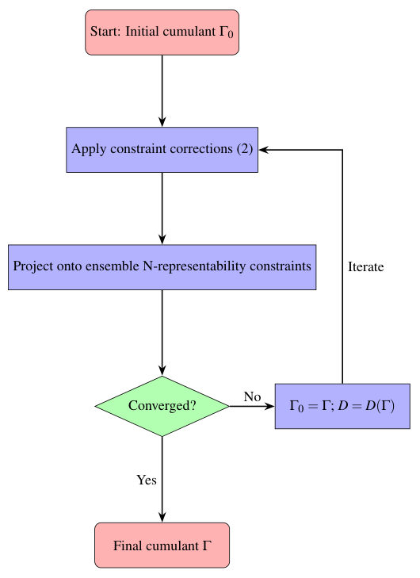
<figcaption class="paper-figure-caption"><b>Fig 1.</b> FIG. 1: Schematic iterative procedure: impose the subsystem constraints on the cumulant, project the 2-RDM D onto the (approximate) set of ensemble N-representable 2-RDMs using the algorithm from reference 72; repeat until convergence.</figcaption>
</figure>
<figure class="paper-figure-card">
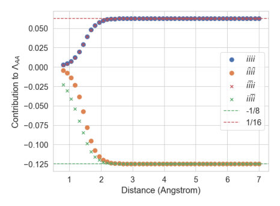
<figcaption class="paper-figure-caption"><b>Fig 2.</b> FIG. 2: Contributions of selected elements of the cumulant during dissociation of N2; i = 1, ¯i = 4</figcaption>
</figure>
<figure class="paper-figure-card">
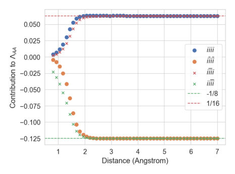
<figcaption class="paper-figure-caption"><b>Fig 3.</b> FIG. 4: Contributions of selected elements of the cumulant during dissociation of NO+; i = 1, ¯i = 4</figcaption>
</figure>
<figure class="paper-figure-card">
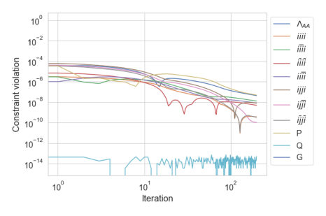
<figcaption class="paper-figure-caption"><b>Fig 4.</b> FIG. 5: Change of violations of constraints of N2 molecule at dissociation regime during iterative procedure.</figcaption>
</figure>
<figure class="paper-figure-card">
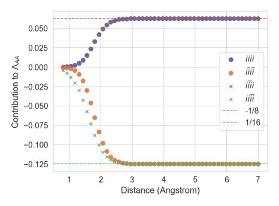
<figcaption class="paper-figure-caption"><b>Fig 5.</b> FIG. 3: Contributions of selected elements of the cumulant during dissociation of O2; i = 0, ¯i = 3</figcaption>
</figure>
</div>
<p><strong>Summary.</strong> This paper improves Reduced Density Matrix Functional Theory (RDMFT) by systematically correcting natural orbital functionals using 4-index cumulant contributions. The method enforces strict physical constraints derived from the asymptotic behavior of fragment spin and delocalization indices upon bond breaking. This leads to highly accurate energy predictions that match high-level CASSCF calculations in the dissociation limit.</p>
<p><strong>Why it may be interesting.</strong> This work directly addresses fundamental limitations in describing static correlation and bond dissociation within quantum chemistry methods, which is crucial for understanding molecular electronic structure dynamics relevant to AMO physics.</p>
<details>
<summary>Detailed structure</summary>
<p><strong>Main problem.</strong> Developing more accurate natural orbital functional approximations for Reduced Density Matrix Functional Theory (RDMFT) to correctly model bond breaking.</p>
<p><strong>Main result.</strong> The updated functional, incorporating 4-index cumulant contributions and enforcing physical constraints, reproduces CASSCF energies exactly in the dissociation regime for benchmark molecules like N2 and O2.</p>
<p><strong>Method.</strong> The authors correct the PNOF5 functional by minimizing the distance to a target cumulant while imposing linear constraints derived from known asymptotic behaviors of local spin and delocalization indices.</p>
<p><strong>Model / system.</strong> The study focuses on electronic structure calculations using RDMFT, specifically analyzing the dissociation process of diatomic molecules (e.g., N2, O2) into two fragments.</p>
<p><strong>Key observables.</strong> Bond dissociation energies, fragment population covariance (delocalization index), local spin angular momentum ($\langle \hat{S}^2 
angle$), and cumulant elements ($\Gamma_{ij;kl}$).</p>
<p><strong>Important parameters / regimes.</strong> The dissociation limit ($|R_{AB}|	o\infty$) is the critical regime analyzed for benchmarking.</p>
<p><strong>Assumptions / limitations.</strong> The approach assumes that enforcing physical constraints on the cumulants can systematically improve functional accuracy, although limitations exist when active electrons are small or far from dissociation.</p>
<p><strong>Figures summary.</strong> Figures illustrate the iterative procedure flowchart and show how constraint violations (P, Q, G conditions) decrease towards convergence during molecular dissociation for various species.</p>
<p><strong>Paper structure.</strong> The paper progresses by identifying the failure of existing functionals at bond breaking, proposing a constrained optimization method to correct cumulant contributions, demonstrating convergence through iterative projection onto N-representability, and finally benchmarking against CASSCF results across several molecules.</p>
</details>
<details>
<summary>Abstract</summary>
<p>Accurate modeling of bond breaking remains a central challenge for reduced density matrix functional theory (RDMFT). Although some modern functionals can yield reasonably accurate dissociation energies, they often fail to reproduce key properties of the dissociated fragments, such as a vanishing fragment population covariance (also known as the delocalization index) and the correct total spin angular momentum of each fragment (local spin). In this work, we revisit the construction of natural orbital functionals by correcting the cumulant contribution produced by the PNOF5 functional. Our method enforces known contributions of the cumulant to local spin fragments and the delocalization index at the dissociation limit. We obtain the closest cumulant consistent with these physically motivated constraints and subsequently purify the corresponding one- and two-electron reduced density matrices by imposing the standard $P, Q, \text{and } G$ $N$-representability conditions. The resulting functional yields improved behavior in strongly correlated regimes. Benchmarking on the dissociation of the singlet states of \ce{N2}, \ce{NO+}, \ce{O2}, \ce{S2}, and \ce{CO} shows that in the dissociation regime the energies computed from the updated cumulant exactly reproduce the complete active space self-consistent field (CASSCF) energies. We further analyze the limitations of the approach and identify scenarios in which the current approach performs poorly. This work provides a pathway for systematically improving natural orbital functionals to achieve reliable bond-breaking calculations within RDMFT.</p>
</details>
<p><sub><a href="#top">↑ back to top</a></sub></p>
</details>
<h2 id="secondary-cond-mat-archives">Secondary cond-mat archives</h2>
<p><em>Papers from cond-mat.mtrl-sci, mes-hall, other, soft, supr-con. These archives are de-prioritized — they appear at the end regardless of relevance score.</em></p>
<h3 id="relevant-in-secondary-archives-16">Relevant in secondary archives (16)</h3>

<p><a id="paper-2607.21506"></a></p>
<h3 id="a-statistical-physics-framework-for-translocation-elastometry-of-deformable-particles"><a href="http://arxiv.org/abs/2607.21506v1">A statistical-physics framework for translocation elastometry of deformable particles</a></h3>
<p><strong>Authors:</strong> Pierre Ronceray<br>
<strong>Type:</strong> theory · <strong>Category:</strong> statistical mechanics · <strong>PDF:</strong> <a href="https://arxiv.org/pdf/2607.21506v1">https://arxiv.org/pdf/2607.21506v1</a><br>
<strong>Analysis basis:</strong> full PDF text, analyzed in chunks
<strong>Topic relevance:</strong> 🔥 <code>methods for driven-dissipative</code> <strong>4/5</strong> · 🔥 <code>non-equilibrium dynamics</code> <strong>4/5</strong> · <code>Keldysh / 2PI / non-Gaussian methods</code> <strong>3/5</strong> · <code>driven-dissipative phase transition</code> <strong>3/5</strong> · <code>non-equilibrium universality</code> <strong>3/5</strong> · <code>Frenkel-Kontorova</code> <strong>2/5</strong> · <code>quantum measurements</code> <strong>2/5</strong> · <code>Kondo &amp; dissipative impurity</code> <strong>1/5</strong> · <code>analog quantum simulation</code> <strong>1/5</strong> · <code>correlated / nonlocal dissipation</code> <strong>1/5</strong> · <code>scars &amp; prethermalization</code> <strong>1/5</strong></p>
<div class="figure-strip-hint">↔ Scroll figures horizontally</div>
<div class="paper-figures-scroll">
<figure class="paper-figure-card">
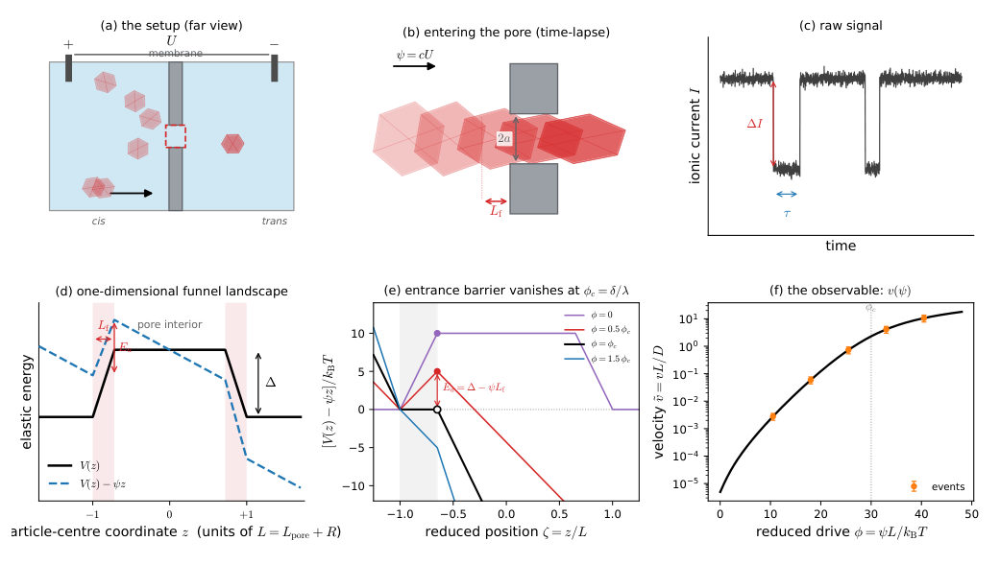
<figcaption class="paper-figure-caption"><b>Fig 1.</b> FIG. 1. From experiment to model. (a) An example setting: soft particles suspended in an electrolyte are driven by a voltage U across a membrane pierced by a single pore. (b) Time-lapse of a single particle entering the pore: driven by a force ψ = cU, a particle of radius R &gt; a compresses radially to pass, over an axial funnel length Lf—the distance its centre advances between first contact and full insertion. (c) The raw observable: each translocation is a blockade in the ionic current, of depth ∆I and dwell time τ. (d) The one-dimensional reduction: the particle-centre coordinate z experiences a piecewise-linear elastic potential V (z) of depth ∆, ramped over Lf at each mouth and tilted...</figcaption>
</figure>
<figure class="paper-figure-card">
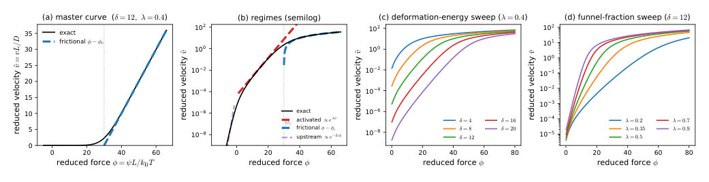
<figcaption class="paper-figure-caption"><b>Fig 2.</b> FIG. 2. Master velocity curve. (a) Reduced velocity ˜v = vL/D versus reduced force ϕ = ψL/kBT on a linear scale, with the frictional asymptote ϕ −ϕc. (b) The same on a semilog scale, with the activated and upstream asymptotes and the crossover ϕc marked. (c,d) Sweeps over the reduced deformation energy δ = ∆/kBT and funnel fraction λ = Lf/L. All curves are the exact closed form Eq. (6).</figcaption>
</figure>
<figure class="paper-figure-card">
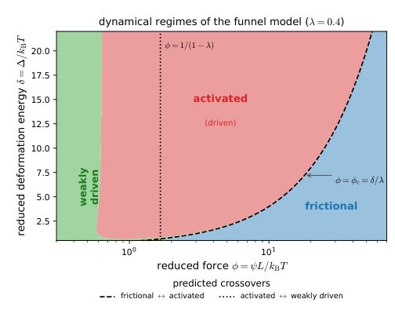
<figcaption class="paper-figure-caption"><b>Fig 3.</b> FIG. 3. Dynamical-regime phase diagram in the reduced force–deformation-energy plane (ϕ, δ) at fixed λ. Colours mark which asymptote best approximates the exact veloc- ity; the dashed/dotted lines are the predicted crossovers ϕ = ϕc = δ/λ and ϕ = 1/(1 −λ).</figcaption>
</figure>
<figure class="paper-figure-card">
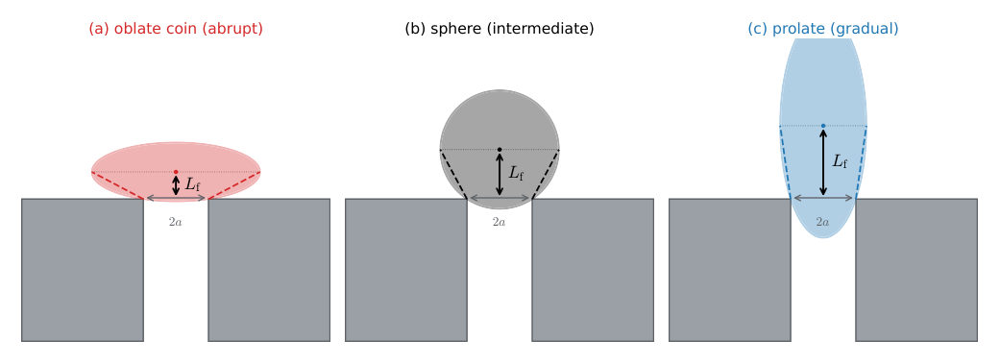
<figcaption class="paper-figure-caption"><b>Fig 4.</b> FIG. 4. The funnel length carries geometric information. Three equal-volume particles of different shape driven along the pore axis into the same pore, drawn at first contact so the funnel length is directly comparable: (a) an oblate “coin” funnels in abruptly (small Lf), (b) a sphere intermediately, and (c) a prolate body gradually (large Lf). Dashed lines mark the effective funnel—the taper from pore rim to equator over the axial distance Lf. For a spheroid of equatorial radius b and polar semi- axis c, Lf = c p</figcaption>
</figure>
<figure class="paper-figure-card">
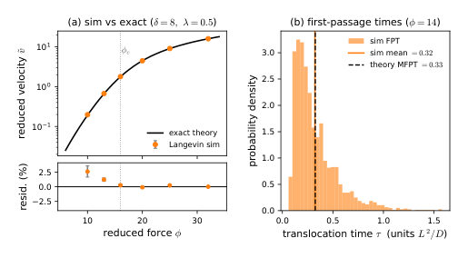
<figcaption class="paper-figure-caption"><b>Fig 5.</b> FIG. 5. Langevin simulation validates the theory. (a) Source– sink simulated velocity (points) on the exact curve (line) across regimes. (b) Simulated translocation-time distribution with the simulated and analytic mean first-passage times.</figcaption>
</figure>
</div>

<p><strong>Summary.</strong> This work presents a statistical physics framework to measure the elasticity and shape of soft nanoparticles by observing their translocation through a nanopore. It models the process using Brownian dynamics across an elastic barrier, deriving distinct velocity laws for low- and high-drive regimes. The key innovation is combining fits from both regimes to create a self-calibrating measurement that bypasses unknown experimental constants.</p>
<p><strong>Why it may be interesting.</strong> The rigorous application of non-equilibrium statistical mechanics (Fokker-Planck formalism) to extract mechanical parameters from time-dependent current measurements is highly relevant for understanding open quantum systems where dissipation and thermal fluctuations dominate the dynamics.</p>
<details>
<summary>Detailed structure</summary>
<p><strong>Main problem.</strong> To develop a mathematical framework that converts rate measurements of a soft particle passing through a narrow pore into quantitative mechanical characterization of the particle's deformation energy and geometry.</p>
<p><strong>Main result.</strong> By combining measurements from both low-drive (activated) and high-drive (frictional) regimes, the method achieves a self-calibrating readout to determine the dimensionless deformation energy ($\Delta/k_B T$) without needing to know the unknown force-to-voltage conversion factor.</p>
<p><strong>Method.</strong> The problem is solved exactly by analyzing the steady-state Fokker–Planck equation governing one-dimensional over-damped Brownian dynamics across an elastic barrier, identifying distinct dynamical regimes based on applied drive strength.</p>
<p><strong>Model / system.</strong> The system models a deformable soft particle translocating through a pore using a 'funnel model' potential. The dynamics are governed by the Langevin equation, analyzed via its steady-state probability flux.</p>
<p><strong>Key observables.</strong> Mean translocation velocity ($v$), deformation energy ($\Delta/k_B T$), funnel length ($L_f$), and crossover force ($\psi_c$).</p>
<p><strong>Important parameters / regimes.</strong> Deformation energy ($\Delta$), pore geometry parameter ($L_f$), applied driving force ($\psi$), and thermal energy scale ($k_B T$).</p>
<p><strong>Assumptions / limitations.</strong> The analysis assumes the drive is constant, the process can be reduced to a single reaction coordinate (one-dimensional dynamics), and initially models the elastic potential as piecewise linear.</p>
<p><strong>Figures summary.</strong> Figures illustrate the one-dimensional potential landscape, the master velocity curve showing distinct regimes (linear/activated), and phase diagrams mapping these dynamical regions in parameter space.</p>
<p><strong>Paper structure.</strong> The paper establishes the physical model via the Langevin equation, solves the resulting Fokker-Planck equation to derive analytical expressions for velocity in different drive regimes, and then proposes a dual-readout fitting procedure that combines linear (frictional) and exponential (activated) fits to eliminate unknown constants.</p>
</details>
<details>
<summary>Abstract</summary>
<p>A soft particle driven through a pore narrower than itself must deform to pass, and how quickly it does so is set by how hard it is to squeeze. We propose a mathematical framework for turning rate measurements of this driven, stochastic passage into quantitative mechanical measurements. Treating the entry of the particle as one-dimensional Brownian dynamics across an elastic barrier, we solve the transport problem exactly and identify two dynamical regimes: at low drive the passage is thermally activated and limited by the energy needed to deform the particle, and at high drive it is friction-limited. We propose a framework to extract the particle's deformation energy and relevant geometrical information by combining measurements in these two regimes. This method could be used in the context of nanopore sensing, where the drive is an applied voltage: the framework then provides a self-calibrating route---translocation elastometry---from a current-voltage measurement to the elasticity and shape of individual soft nanoparticles.</p>
</details>
<p><sub><a href="#top">↑ back to top</a></sub></p>

<p><a id="paper-2607.21566"></a></p>
<h3 id="an-integrated-all-van-der-waals-nanobeam-laser"><a href="http://arxiv.org/abs/2607.21566v1">An integrated all-van der Waals nanobeam laser</a></h3>
<p><strong>Authors:</strong> Aris Koulas-Simos, Pietro Metuh, Athanasios Paralikis, Kartik Gaur, Maximilian Klonz, Imad Limame, Bárbara L. T. Rosa, Chirag C. Palekar, Battulga Munkhbat, Stephan Reitzenstein<br>
<strong>Type:</strong> experiment · <strong>Category:</strong> other · <strong>PDF:</strong> <a href="https://arxiv.org/pdf/2607.21566v1">https://arxiv.org/pdf/2607.21566v1</a><br>
<strong>Analysis basis:</strong> full PDF text, analyzed in chunks
<strong>Topic relevance:</strong> 🔥 <code>quantum optics experiment</code> <strong>4/5</strong> · <code>correlated cavity matter</code> <strong>3/5</strong> · <code>driven-dissipative phase transition</code> <strong>3/5</strong> · <code>interference shaping light</code> <strong>3/5</strong> · <code>superradiant laser</code> <strong>3/5</strong> · <code>Tavis-Cummings &amp; cavity-many-emitter</code> <strong>2/5</strong> · <code>non-equilibrium dynamics</code> <strong>2/5</strong> · <code>analog quantum simulation</code> <strong>1/5</strong> · <code>correlated / nonlocal dissipation</code> <strong>1/5</strong> · <code>methods for driven-dissipative</code> <strong>1/5</strong> · <code>non-equilibrium universality</code> <strong>1/5</strong> · <code>quantum measurements</code> <strong>1/5</strong></p>
<div class="figure-strip-hint">↔ Scroll figures horizontally</div>
<div class="paper-figures-scroll">
<figure class="paper-figure-card">
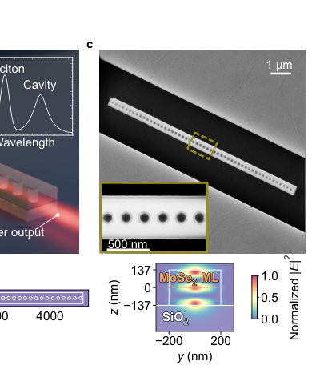
<figcaption class="paper-figure-caption"><b>Fig 1.</b> Fig. 1 All-vdW nanobeam cavity platform. a Schematic illustration of the WS2/MoSe2/WS2 heterostructure integrated into a photonic-crystal nanobeam cavity. The embedded MoSe2 ML pro- vides optical gain, while the surrounding multilayer WS2 simultaneously acts as the photonic cavity. b Three-dimensional FEM simulations of the dielectric-band cavity mode, showing the electric-field intensity distribution in the lateral (x–y) and vertical (y–z) planes together with the nanobeam geometry consisting of a taper and a mirror section. c Scanning electron microscopy image of a rep- resentative fabricated nanobeam cavity with a magnified view of the photonic-crystal region.</figcaption>
</figure>
<figure class="paper-figure-card">
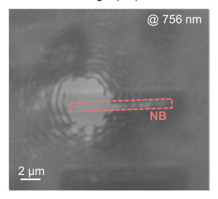
<figcaption class="paper-figure-caption"><b>Fig 2.</b> Fig. 2 Exciton-cavity coupling and directional emission in all-vdW nanobeam cavities. a Normalized temperature-dependent µPL map showing the spectral evolution of the neutral MoSe2 A- exciton (X) and cavity mode (C). The dotted lines represent fits to the extracted emission wavelengths (see Supplementary Section 6 for details on the fits). b Representative unnormalized spectra recorded at selected temperatures. c Real-space PL image recorded at the cavity resonance wavelength, show- ing resonant coupling into and propagation along the nanobeam. d Angle-resolved Fourier-space emission measured for linear polarizations oriented perpendicular and parallel to the nanobeam axis, respectively....</figcaption>
</figure>
</div>

<p><strong>Summary.</strong> The research demonstrates a novel all-van der Waals nanobeam laser built from $    ext{WS}_2/  ext{MoSe}_2/    ext{WS}_2$ heterostructures. By combining structural engineering with advanced photon correlation measurements, the authors provide strong evidence for high-$eta$ lasing operation in these layered materials. This establishes a promising platform for scalable quantum-photonic circuits.</p>
<p><strong>Why it may be interesting.</strong> This work directly addresses the intersection of solid-state physics, cavity QED, and nonlinear optics by using layered materials to create highly controllable, integrated quantum light sources.</p>
<details>
<summary>Detailed structure</summary>
<p><strong>Main problem.</strong> To demonstrate an all-van der Waals (all-vdW) high-$eta$ nanobeam laser and establish these heterostructures as a viable platform for integrated coherent light sources.</p>
<p><strong>Main result.</strong> The authors successfully demonstrated lasing in the $  ext{WS}_2/  ext{MoSe}_2/    ext{WS}_2$ structure, verified by observing a transition to Poissonian photon statistics ($g^{(2)}(0) 	o 1.07$) and characteristic high-$eta$ nonlinear input-output behavior.</p>
<p><strong>Method.</strong> The study combines microphotoluminescence ($\mu	ext{PL}$) spectroscopy, finite-element simulations for optical confinement, and crucial quantum-optical measurements using photon autocorrelation ($g^{(2)}$).</p>
<p><strong>Model / system.</strong> The physical system is an all-vdW heterostructure ($    ext{WS}_2/  ext{MoSe}_2/    ext{WS}_2$) patterned into a nanobeam cavity, where the $   ext{MoSe}_2$ monolayer provides optical gain coupled to the surrounding $   ext{WS}_2$-based resonator.</p>
<p><strong>Key observables.</strong> Photon autocorrelation function $g^{(2)}(0)$ (decreasing from 1.28 to 1.07), soft S-shaped input-output curve, linewidth narrowing, and strong directional/linear polarization of emission.</p>
<p><strong>Important parameters / regimes.</strong> High-$eta$ parameter ($\approx 0.986$), threshold power ($P_{	ext{th}} \approx 9-29 	ext{ kW cm}^{-2}$), cryogenic temperatures (operating near $T_{	ext{eff}} \approx 60 	ext{ K}$).</p>
<p><strong>Assumptions / limitations.</strong> The authors argue that conventional signatures ($    ext{I/O}$ curve) are insufficient, necessitating quantum measurements ($g^{(2)}$) for unambiguous proof of high-$eta$ lasing.</p>
<p><strong>Figures summary.</strong> Figures show $\mu	ext{PL}$ maps confirming mode confinement and spectral overlap; subsequent figures detail the power-dependent $g^{(2)}(	au)$ measurements showing the transition to Poissonian statistics, and the temporal broadening analysis.</p>
<p><strong>Paper structure.</strong> The paper progresses from demonstrating basic exciton-cavity coupling via $\mu	ext{PL}$ (Fig. 2), establishing classical high-$eta$ signatures ($    ext{I/O}$ curve) (Fig. 3), and finally providing definitive quantum verification through power-dependent photon autocorrelation measurements (Section 5).</p>
</details>
<details>
<summary>Abstract</summary>
<p>Transition-metal dichalcogenides offer a promising platform for integrated coherent light sources, yet lasing has largely relied on hybrid photonic architectures without direct quantum-optical verification. Here, we demonstrate an all-van der Waals (all-vdW) high-$β$ nanobeam laser based on a WS$_2$/MoSe$_2$/WS$_{2}$ heterostructure, with the MoSe$_2$ monolayer directly integrated in the WS$_{2}$-based optical resonator for optimal gain-mode overlap. The devices exhibit efficient exciton-cavity coupling at cryogenic temperatures, strongly directional and linearly polarized emission, soft nonlinear input-output characteristics and linewidth narrowing, enabling lasing operation with $β$ near unity. Excitation-power-dependent photon-autocorrelation measurements reveal a transition from thermal to Poissonian photon statistics, with $g_{\mathrm{peak}}^{(2)}(0)$ decreasing from $(1.28\,\pm\,0.09)$ near threshold to $(1.07\,\pm\,0.07)$ above threshold, directly verifying lasing operation. Furthermore, temporal broadening of the autocorrelation uncovers fluctuation-dominated lasing dynamics. These results establish all-vdW heterostructures as a highly attractive platform for integrated coherent light sources in layered-material photonic architectures and scalable quantum-photonic circuits.</p>
</details>
<p><sub><a href="#top">↑ back to top</a></sub></p>

<p><a id="paper-2607.20856"></a></p>
<h3 id="exceptional-points-in-a-parallel-double-quantum-dot-josephson-junction-coupled-to-a-ferromagnetic-reservoir"><a href="http://arxiv.org/abs/2607.20856v1">Exceptional Points in a Parallel Double-Quantum-Dot Josephson Junction Coupled to a Ferromagnetic Reservoir</a></h3>
<p><strong>Authors:</strong> Yiyan Wang, Ruixin Zhou, Bing Dong<br>
<strong>Type:</strong> theory · <strong>Category:</strong> other · <strong>PDF:</strong> <a href="https://arxiv.org/pdf/2607.20856v1">https://arxiv.org/pdf/2607.20856v1</a><br>
<strong>Analysis basis:</strong> full PDF text, analyzed in chunks
<strong>Topic relevance:</strong> 🔥 <code>driven-dissipative phase transition</code> <strong>4/5</strong> · 🔥 <code>methods for driven-dissipative</code> <strong>4/5</strong> · <code>Keldysh / 2PI / non-Gaussian methods</code> <strong>3/5</strong> · <code>correlated / nonlocal dissipation</code> <strong>3/5</strong> · <code>spintronics-quantum-optics interface</code> <strong>3/5</strong> · <code>Kondo &amp; dissipative impurity</code> <strong>2/5</strong> · <code>non-equilibrium dynamics</code> <strong>2/5</strong> · <code>analog quantum simulation</code> <strong>1/5</strong> · <code>exotic spin models in light-matter</code> <strong>1/5</strong> · <code>non-equilibrium universality</code> <strong>1/5</strong></p>
<div class="figure-strip-hint">↔ Scroll figures horizontally</div>
<div class="paper-figures-scroll">
<figure class="paper-figure-card">
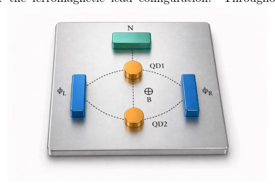
<figcaption class="paper-figure-caption"><b>Fig 1.</b> FIG. 1. (Color online) Parallel double-quantum-dot Joseph- son junction coupled to a normal or ferromagnetic reservoir.</figcaption>
</figure>
<figure class="paper-figure-card">
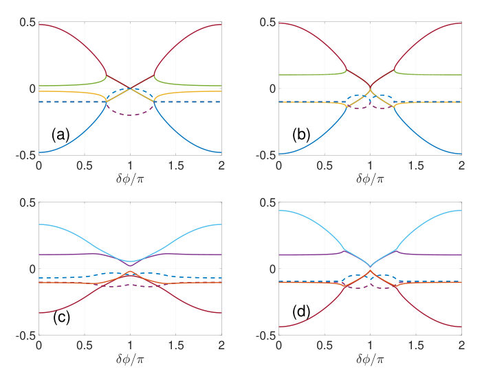
<figcaption class="paper-figure-caption"><b>Fig 2.</b> FIG. 2. (Color online) Energy spectrum of the parallel double quantum dot system based on the BdG Hamiltonian. The solid and dashed lines represent the real and imaginary parts of the eigenenergies, respectively. Parameters are set as: Γ = 0.25, γ↑= γ↓= 0.2, ϕB = 0 and (a) ∆→∞, td = 0. (b) ∆→∞, td = 0.1. (c) ∆= 1, td = 0.1. (d)∆= 10, td = 0.1.</figcaption>
</figure>
<figure class="paper-figure-card">
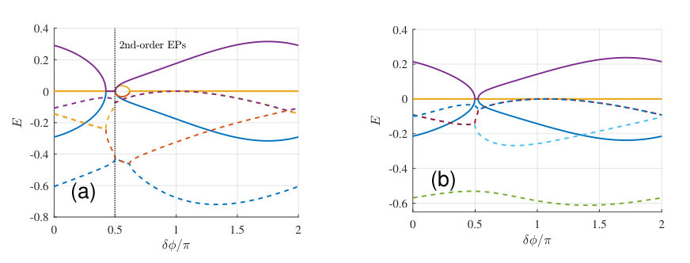
<figcaption class="paper-figure-caption"><b>Fig 3.</b> FIG. 3. (Color online) Energy spectrum of the parallel double quantum dot (DQD) system based on the BdG Hamiltonian. The solid and dashed lines represent the real and imaginary parts of the eigenenergies, respectively. Parameters are set as: Γ = 0.25, γ↑= 0.75, γ↓= 0.25, ϕB = 0.5 π, td = 0 and (a) ∆→∞, (b) ∆= 1.</figcaption>
</figure>
<figure class="paper-figure-card">
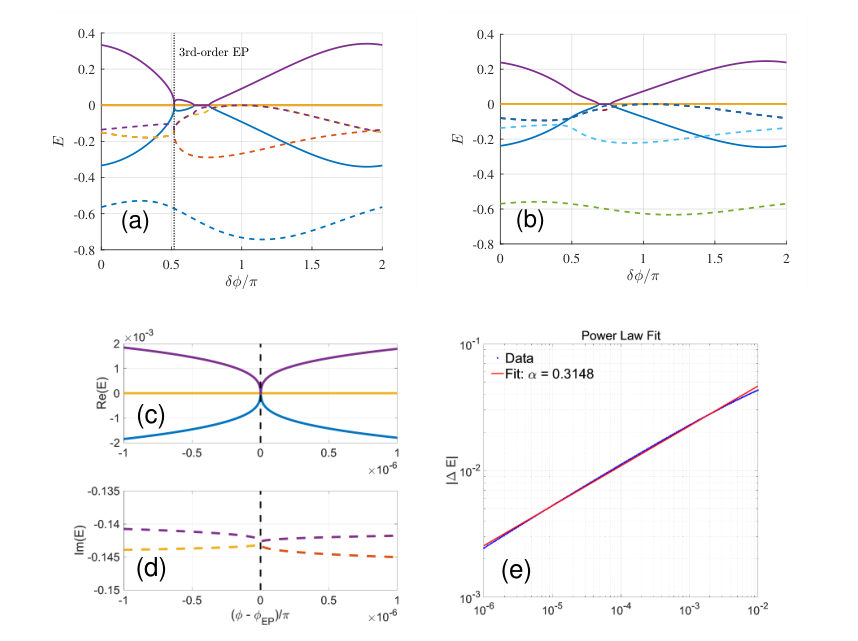
<figcaption class="paper-figure-caption"><b>Fig 4.</b> FIG. 4. (Color online) (a) Complex-energy spectrum for Γ = 0.25, γ↑= 0.75, γ↓= 0.25, ϕB = 0.24075202π, td = 0, and ∆→∞. Solid and dashed curves denote real and imaginary parts, respectively. (b) Corresponding five-level finite-gap surrogate spectrum at ∆= 1. (c),(d) Real and imaginary parts of the eigenvalue splitting near ϕEP. (e) Power-law fit of ∆E versus |δϕ −ϕEP|.</figcaption>
</figure>
<figure class="paper-figure-card">
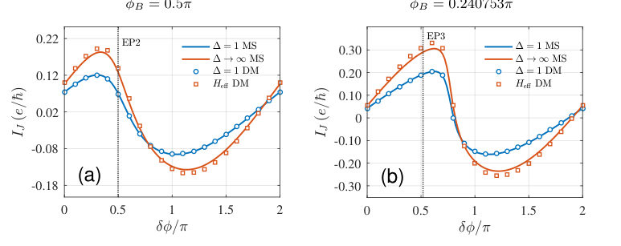
<figcaption class="paper-figure-caption"><b>Fig 5.</b> FIG. 5. (Color online) Josephson current at the two magnetic fluxes indicated above the panels. The currents are calculated using the Matsubara free-energy derivative IJ = 2∂F/∂δϕ, and the density-matrix expectation value IJ = 2⟨∂˜H/∂δϕ⟩. In the legend, MS and DM denote the Matsubara-summation and density-matrix calculations, respectively. For the finite-gap surrogate Hamiltonian with ∆= 1, the two methods give consistent results. The large-gap result with ∆= 100 approaches the infinite-gap low-energy effective model. The vertical dotted lines mark the EP2 and EP3 phase positions identified in Figs. 3(a) and 4(a), respectively; the EP3 label denotes the infinite-gap coalescence, which is...</figcaption>
</figure>
</div>

<p><strong>Summary.</strong> The paper theoretically examines Exceptional Points in a Josephson junction modeled by double quantum dots coupled to reservoirs. It shows that while simple dissipation eliminates predicted EPs, incorporating spin-dependent loss from a ferromagnet stabilizes these singularities. This highlights the potential for controlling non-Hermitian physics using engineered magnetic and spin interactions.</p>
<p><strong>Why it may be interesting.</strong> This work directly addresses open quantum systems dynamics (dissipation) coupled with superconducting phenomena, providing a detailed theoretical framework for controlling non-Hermitian degeneracies using magnetic fields and spin interactions.</p>
<details>
<summary>Detailed structure</summary>
<p><strong>Main problem.</strong> The study investigates the emergence and persistence of Exceptional Points (EPs) in a superconducting nanostructure subjected to dissipation and magnetic flux.</p>
<p><strong>Main result.</strong> Spin-selective dissipation from a ferromagnetic reservoir can stabilize second-order EPs in the finite-gap regime, while Josephson currents remain continuous across these singularities.</p>
<p><strong>Method.</strong> The analysis employs Green's function techniques, deriving effective Hamiltonians (including surrogate models for finite gaps) and performing parity-resolved Fock-space analyses.</p>
<p><strong>Model / system.</strong> The system is a parallel double-quantum-dot Josephson junction coupled to reservoirs, modeled using the Bogoliubov-de Gennes formalism. The physics is governed by superconducting phase difference ($\delta\phi$) and orbital flux ($\Phi_B$).</p>
<p><strong>Key observables.</strong> Complex Andreev spectrum eigenvalues (EPs), Josephson current ($I_J$), and energy splitting behavior.</p>
<p><strong>Important parameters / regimes.</strong> Superconducting gap ($\Delta$), magnetic flux ($\Phi_B$), spin-independent vs. spin-dependent dissipation rates ($\gamma_{\uparrow}, \gamma_{\downarrow}$), and the superconducting phase difference ($\delta\phi$).</p>
<p><strong>Assumptions / limitations.</strong> The analysis compares results in the infinite-gap limit versus a finite-gap surrogate model, noting that finite-gap corrections alter EP coalescence predictions.</p>
<p><strong>Figures summary.</strong> Figures illustrate the complex energy spectrum showing EP2s for spin-independent loss (Fig. 2a) and persistent EP2s under spin-selective dissipation with flux tuning (Fig. 4a).</p>
<p><strong>Paper structure.</strong> The paper progresses by first establishing the model in different limits, comparing infinite-gap vs. finite-gap descriptions, analyzing how dissipation type affects EPs, and finally confirming the robustness of physical observables like Josephson current across these non-Hermitian singularities.</p>
</details>
<details>
<summary>Abstract</summary>
<p>We investigate exceptional points (EPs) in a parallel double-quantum-dot Josephson junction coupled to a dissipative reservoir. By integrating out the leads, we obtain a non-Hermitian Bogoliubov-de Gennes description wherein the superconducting phase difference and orbital flux govern the complex Andreev spectrum. For spin-independent dissipation, the second-order EPs identified within the infinite superconducting gap limit are eliminated when the finite superconducting gap is properly incorporated. In contrast, spin-dependent dissipation originating from a ferromagnetic reservoir, in conjunction with magnetic flux, gives rise to second-order EPs that persist in superconducting leads with finite gap. Moreover, flux tuning enables the coalescence of two second-order EPs into a third-order EP, whose eigenvalue splitting exhibits cubic-root scaling behavior. A many-body parity analysis establishes the connection between the contrasting finite-gap behavior and the spectral relationship between the even- and odd-parity sectors. Finally, Josephson currents calculated from both the free-energy derivative and the surrogate-model density matrix demonstrate consistency and remain continuous across the EPs. These findings establish spin-selective dissipation and interferometric flux as effective control parameters for robust non-Hermitian singularities in superconducting nanostructures.</p>
</details>
<p><sub><a href="#top">↑ back to top</a></sub></p>

<p><a id="paper-2607.20871"></a></p>
<h3 id="machine-learning-for-charge-state-characterization-of-isolated-double-quantum-dots"><a href="http://arxiv.org/abs/2607.20871v1">Machine Learning for Charge State Characterization of Isolated Double Quantum Dots</a></h3>
<p><strong>Authors:</strong> Hyma Vallabhapurapu, Marco Candido, Krishna Choudhary, Paul Steinacker, Ensar Vahapoglu, Chris Escott, Wee Han Lim, Andre Saraiva, Nard Dumoulin Stuyck, MengKe Feng<br>
<strong>Type:</strong> experiment · <strong>Category:</strong> quantum information and computing · <strong>PDF:</strong> <a href="https://arxiv.org/pdf/2607.20871v1">https://arxiv.org/pdf/2607.20871v1</a><br>
<strong>Analysis basis:</strong> full PDF text, analyzed in chunks
<strong>Topic relevance:</strong> 🔥 <code>QC/QI experiment</code> <strong>4/5</strong> · <code>methods for driven-dissipative</code> <strong>1/5</strong> · <code>quantum measurements</code> <strong>1/5</strong> · <code>spintronics-quantum-optics interface</code> <strong>1/5</strong></p>
<div class="figure-strip-hint">↔ Scroll figures horizontally</div>
<div class="paper-figures-scroll">
<figure class="paper-figure-card">
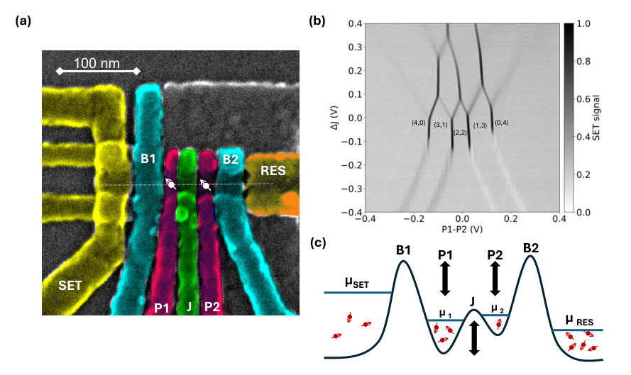
<figcaption class="paper-figure-caption"><b>Fig 1.</b> Figure 1. Overview of the double-quantum-dot (DQD) device and its charge stability map. (a) Representative Scanning- electron-microscope (SEM) image of a DQD device with an integrated single-electron-transistor (SET) charge sensor, with the barrier gates B1 and B2 controlling the tunnel barriers to the SET and to the reservoir respectively. The image is of a device fabricated in an academic cleanroom, shown for illustration of the gate layout only; all charge-stability data in this work are from imec-fabricated devices of nominally identical architecture. (b) A measured charge stability map (CSM): the sensor current recorded while sweeping two plunger-gate voltages (P1-P2), with...</figcaption>
</figure>
<figure class="paper-figure-card">
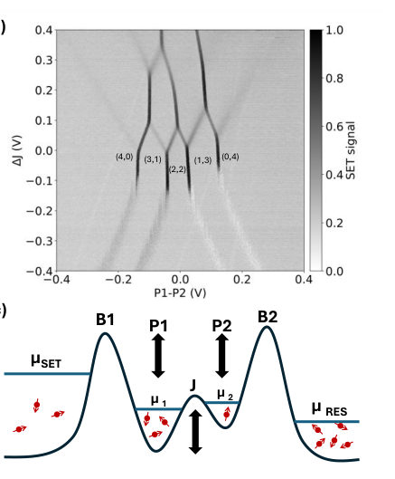
<figcaption class="paper-figure-caption"><b>Fig 2.</b> fig. 1(b).</figcaption>
</figure>
<figure class="paper-figure-card">
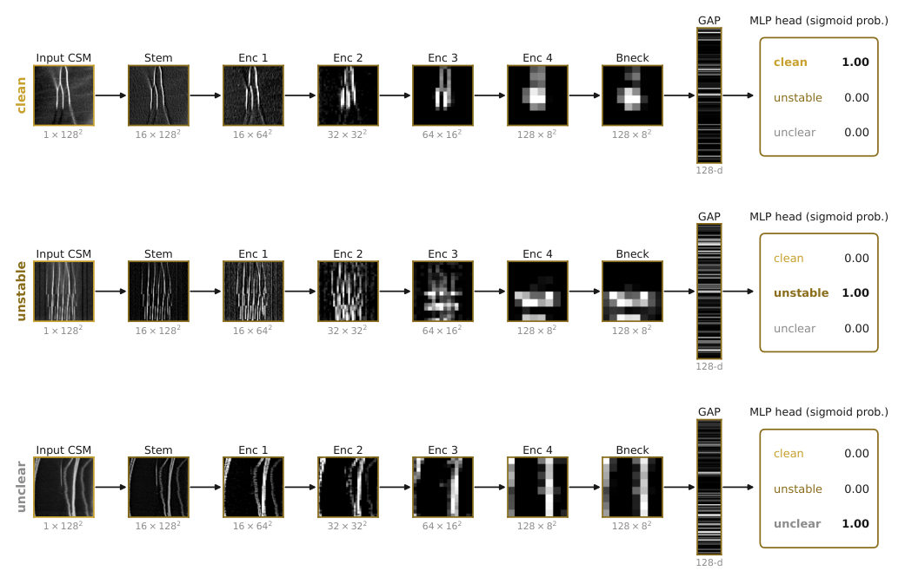
<figcaption class="paper-figure-caption"><b>Fig 3.</b> Figure 2. CSMClassifier architecture visualised on real CSM images, one row per quality class (clean, unstable, unclear). Each row passes a hand-labelled experimental CSM of that class through the trained network and shows the actual intermediate feature maps (only the single highest-variance, i.e. most active, channel is shown at each stage; the remaining channels are omitted to avoid clutter): input →histogram-invariant stem (LCN ∥InstanceNorm) →four isotropic encoder stages →bottleneck →global average pooling (GAP) to a 128-dimensional vector. Spatial and channel dimensions are annotated below each panel. The two-layer MLP head then maps the pooled vector to three independent sigmoid...</figcaption>
</figure>
<figure class="paper-figure-card">
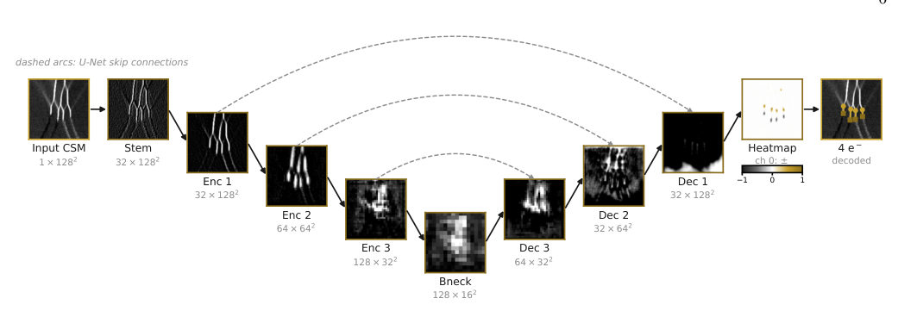
<figcaption class="paper-figure-caption"><b>Fig 4.</b> Figure 3. ChargeLineNet architecture visualised on a real CSM image. A hand-labelled experimental CSM is passed through the trained network and the actual intermediate feature maps are shown left to right (only the single highest-variance, i.e. most active, channel is shown at each stage; the remaining channels are omitted to avoid clutter): input →histogram-invariant stem (LCN ∥InstanceNorm) →three anisotropic encoder levels →bottleneck →three U-Net decoder levels, whose skip connections are drawn as dashed arcs. The spatial and channel dimensions after each stage are annotated below the corresponding panel. The final 1×1 head produces the signed heatmap (channel 0; positive peaks mark...</figcaption>
</figure>
<figure class="paper-figure-card">
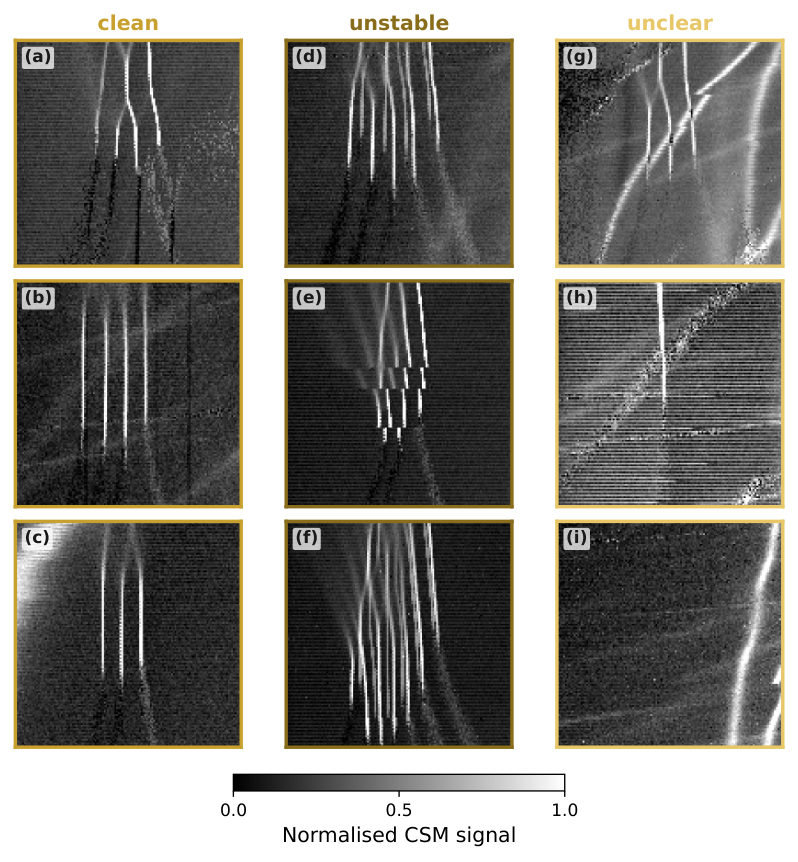
<figcaption class="paper-figure-caption"><b>Fig 5.</b> Figure 4. Representative CSM images from the three quality classes, one class per column (three examples each). Left column (a–c), clean: well-resolved charge-transition lines with clear contrast against the background, suitable for automated line detection. Middle column (d–f), unstable: images in which the electron occupancy visibly jumps mid-scan, so that transition lines abruptly appear or disappear part-way across the image (telegraph switching or spurious tunnelling), leaving no single consistent line count. Right column (g–i), unclear: images whose line count is ambiguous even to a human reader, owing to low signal, sensor artefacts, obscuring background transitions, or SET signal...</figcaption>
</figure>
</div>

<p><strong>Summary.</strong> This paper presents two specialized Convolutional Neural Networks designed to automate the analysis of Charge Stability Maps (CSMs) from isolated double quantum dots. By combining a quality classifier with a line-counting network, the authors created a highly accurate and computationally efficient pipeline for determining electron occupancy. This breakthrough offers a practical path toward scalable characterization and tuning of solid-state spin qubits.</p>
<p><strong>Why it may be interesting.</strong> This work directly addresses the engineering bottleneck in scaling solid-state quantum computing platforms by providing an automated diagnostic tool for qubit characterization.</p>
<details>
<summary>Detailed structure</summary>
<p><strong>Main problem.</strong> The manual analysis of Charge Stability Maps (CSMs) for tuning spin qubits in quantum dot arrays is inefficient, especially in the isolated-mode regime.</p>
<p><strong>Main result.</strong> A combined ML pipeline achieved high accuracy (93.8% on clean images) and demonstrated scalability by running fast (under 60 ms) with minimal memory footprint (6.5 MB).</p>
<p><strong>Method.</strong> The authors developed two specialized Convolutional Neural Networks (CNNs)—CSMClassifier and ChargeLineNet—to automate image quality screening and charge-transition line localization, respectively.</p>
<p><strong>Model / system.</strong> The work uses Double Quantum Dots (DQDs) fabricated on SiMOS devices, operated in an isolated mode. The system is characterized by measuring CSMs via automated cryogenic probing at $\sim 1$ K.</p>
<p><strong>Key observables.</strong> Charge-transition lines, electron occupancy derived from line counts, and image quality metrics (Clean/Unstable/Unclear).</p>
<p><strong>Important parameters / regimes.</strong> Operating temperature ($\sim 1$ K), number of parameters (&lt; 1 million for each model), and cross-device generalization performance.</p>
<p><strong>Assumptions / limitations.</strong> The primary assumption is that the near-vertical nature of charge transitions in isolated mode makes them ideal targets for compact, task-specific CNN models; classical counting methods are insufficient due to artifacts.</p>
<p><strong>Figures summary.</strong> Figure 1 illustrates the DQD device structure, a measured CSM showing transition lines, and potential/gate voltage diagrams used for characterization.</p>
<p><strong>Paper structure.</strong> The paper introduces the problem of automated qubit tuning via CSM analysis. It details the two-stage ML pipeline (classification followed by line detection) using CNNs trained on experimental data, reports quantitative performance metrics against held-out sets, and concludes with a discussion of the practical scalability of the combined tool.</p>
</details>
<details>
<summary>Abstract</summary>
<p>Scaling semiconductor quantum dot arrays toward fault-tolerant quantum computing requires efficient tuneup of spin qubits, a process that depends on the analysis of charge stability maps (CSMs) and remains largely manual. While machine learning has been widely applied to CSM analysis in reservoir-coupled devices, automated tuning in the increasingly important isolated-mode regime has received limited attention. In isolated-mode CSMs, charge transitions appear as near-vertical lines, making them well suited to compact, task-specific models. We present two convolutional neural networks with fewer than one million parameters, trained on CSMs collected from 32 silicon metal-oxide-semiconductor (SiMOS) double-quantum-dot devices measured at approximately 1 K using an automated cryogenic probing system. Sixteen devices were used for training and sixteen were held out to evaluate cross-device generalization against hand-labeled ground truth. CSMClassifier identifies charge instability and sensor artifacts, achieving 94% macro-averaged accuracy across three quality classes on 2,407 held-out images. ChargeLineNet localizes charge-transition lines and determines electron occupancy, achieving 95.3% exact line-count accuracy on 1,131 held-out images. Combined into a single pipeline, the models correctly determine electron occupancy for 93.8% of clean held-out images. Pre-training on synthetic images substantially improves label efficiency. Fine-tuning the pre-trained model on limited experimental data maintains over 90% accuracy, whereas training from scratch degrades significantly under the same conditions. Together, the two models occupy only 6.5 MB and process images in less than 60 ms on standard laboratory hardware, demonstrating a practical path toward scalable, automated characterization and tuneup of quantum-dot devices.</p>
</details>
<p><sub><a href="#top">↑ back to top</a></sub></p>

<p><a id="paper-2607.21525"></a></p>
<h3 id="sequential-topological-superconductivity-in-a-square-lattice-with-chiral-charge-density-waves"><a href="http://arxiv.org/abs/2607.21525v1">Sequential Topological Superconductivity in a Square Lattice with Chiral Charge Density Waves</a></h3>
<p><strong>Authors:</strong> Zhong-Xian Jin, Junkang Huang, Yu-Xuan Li, Tao Zhou<br>
<strong>Type:</strong> theory · <strong>Category:</strong> strongly correlated electrons · <strong>PDF:</strong> <a href="https://arxiv.org/pdf/2607.21525v1">https://arxiv.org/pdf/2607.21525v1</a><br>
<strong>Analysis basis:</strong> full PDF text, analyzed in chunks
<strong>Topic relevance:</strong> 🔥 <code>analog quantum simulation</code> <strong>4/5</strong> · <code>Keldysh / 2PI / non-Gaussian methods</code> <strong>1/5</strong> · <code>driven-dissipative phase transition</code> <strong>1/5</strong> · <code>entanglement &amp; information structure</code> <strong>1/5</strong></p>
<div class="figure-strip-hint">↔ Scroll figures horizontally</div>
<div class="paper-figures-scroll">
<figure class="paper-figure-card">

<figcaption class="paper-figure-caption"><b>Fig 1.</b> FIG. 1. Schematic of the real-space CDW pattern. Solid and dashed bonds represent the charge bond order (CBO), with solid (dashed) lines denoting inter-cell (intra-cell) bonds. Ar- rows indicate the loop currents of the chiral flux phase (CFP), with the arrow direction encoding the sign of the imaginary hopping modulation.</figcaption>
</figure>
<figure class="paper-figure-card">
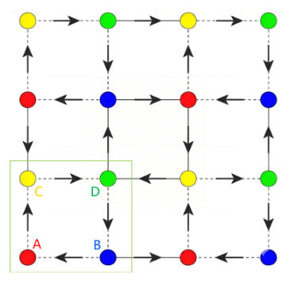
<figcaption class="paper-figure-caption"><b>Fig 2.</b> Fig. 1. The corresponding Hamiltonian is</figcaption>
</figure>
<figure class="paper-figure-card">
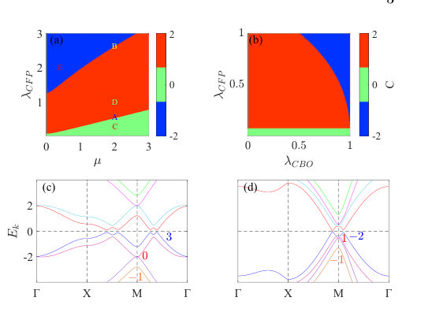
<figcaption class="paper-figure-caption"><b>Fig 3.</b> FIG. 2. Topological phase diagrams and band-resolved Chern numbers. (a) Phase diagram in the µ-λCFP plane with λCBO = 0.2. (b) Phase diagram in the λCBO-λCFP plane with µ = 0.2. (c),(d) Band structures at points D and E in (a), corresponding to the C = 2 and C = −2 phases with (µ, λCFP) = (2, 1) and (0.5, 2), respectively. The Chern num- ber of each occupied band is labeled in each panel.</figcaption>
</figure>
<figure class="paper-figure-card">
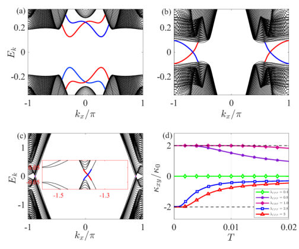
<figcaption class="paper-figure-caption"><b>Fig 4.</b> FIG. 3. Energy spectra under partial open boundary con- ditions and thermal Hall conductivity. (a)–(c) Energy spec- tra with λCBO = 0.2 at points C, D, and E in Fig. 2(a), with (µ, λCFP) = (2, 0.4), (2, 1), and (0.5, 2), respectively. (d) Thermal Hall conductivity κxy versus T for (µ, λCBO) = (2, 0.2) at several λCFP values.</figcaption>
</figure>
<figure class="paper-figure-card">
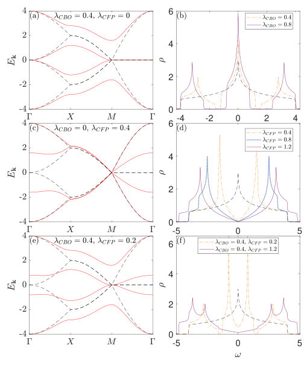
<figcaption class="paper-figure-caption"><b>Fig 5.</b> FIG. 4. Energy bands (left panels) and DOS (right panels) along the high-symmetry path Γ-X-M-Γ. (a),(b) CBO only (λCFP = 0); (c),(d) CFP only (λCBO = 0); (e),(f) both CBO and CFP. Dashed curves indicate the corresponding quantities without CDW.</figcaption>
</figure>
</div>

<p><strong>Summary.</strong> This work theoretically explores how the combination of real and imaginary bond modulations within a square lattice superconductor induces sequential transitions into topologically non-trivial superconducting phases. By calculating the Chern number and predicting quantized thermal Hall conductivity plateaus, the authors establish this platform as a robust method for engineering topological superconductivity.</p>
<p><strong>Why it may be interesting.</strong> The explicit connection between engineered charge order parameters (CDW) and robust topological superconductivity provides a concrete theoretical pathway for realizing exotic quantum states, which is highly relevant to understanding unconventional pairing mechanisms in correlated materials.</p>
<details>
<summary>Detailed structure</summary>
<p><strong>Main problem.</strong> The study investigates topological superconducting phases arising from the interplay between superconductivity and a composite Charge Density Wave (CDW) in a square lattice.</p>
<p><strong>Main result.</strong> The coexistence of real bond modulation (CBO) and imaginary hopping modulation (CFP) drives the system into two distinct, topologically nontrivial superconducting phases characterized by Chern numbers $C=+2$ and $C=-2$.</p>
<p><strong>Method.</strong> Theoretical analysis using the Bogoliubov-de Gennes (BdG) Hamiltonian in momentum space, calculating topological invariants like the Chern number via the Kubo formula.</p>
<p><strong>Model / system.</strong> The model is a square-lattice superconductor subjected to a composite CDW consisting of CBO ($\lambda_{	ext{CBO}}$) and CFP ($\lambda_{	ext{CFP}}$). The Hamiltonian is analyzed in the Altland-Zirnbauer class D, breaking time-reversal symmetry.</p>
<p><strong>Key observables.</strong> Quantized plateaus in the zero-temperature thermal Hall conductivity ($\kappa_{xy} \propto C$), Chern number ($C$), and gapless edge modes observed via spectral function analysis.</p>
<p><strong>Important parameters / regimes.</strong> The relative strengths of $\lambda_{	ext{CBO}}$ and $\lambda_{	ext{CFP}}$, chemical potential ($\mu$), and temperature (analyzed in the zero-temperature limit).</p>
<p><strong>Assumptions / limitations.</strong> The superconducting pairing is assumed to be an isotropic s-wave form, and the analysis relies on diagonalizing the BdG Hamiltonian.</p>
<p><strong>Figures summary.</strong> Figures schematically show the real-space CDW pattern (CBO/CFP) and illustrate topological phase diagrams showing transitions between $C=-2, 0, 2$ phases as parameters are varied.</p>
<p><strong>Paper structure.</strong> The paper progresses by defining the Hamiltonian incorporating CBO and CFP, analyzing the resulting band structure evolution through different parameter regimes, determining the topological invariants ($C$) at critical points via gap closing mechanisms (quadratic vs. linear touching), and finally predicting observable signatures like quantized $\kappa_{xy}$.</p>
</details>
<details>
<summary>Abstract</summary>
<p>The interplay between charge order and superconductivity offers a fertile ground for emergent quantum phases. Here we theoretically investigate a square-lattice superconductor coexisting with a composite charge density wave (CDW) consisting of a real bond modulation (charge bond order, CBO) and an imaginary hopping modulation (chiral flux phase, CFP) that breaks time-reversal symmetry. We uncover that, while CFP alone does not induce topology in square lattices, its coexistence with CBO drives the system into two topologically nontrivial superconducting phases with Chern numbers $C=+2$ and $C=-2$. The low-temperature thermal Hall conductivity $κ_{xy}$ exhibits quantized plateaus proportional to the Chern number, providing a clear experimental fingerprint. Our results establish the square lattice as a pristine platform for engineering topological superconductivity through the synergy of real and imaginary bond modulations.</p>
</details>
<p><sub><a href="#top">↑ back to top</a></sub></p>

<p><a id="paper-2607.21507"></a></p>
<h3 id="supercurrent-effect-in-a-charge-density-wave-intertwined-superconductor"><a href="http://arxiv.org/abs/2607.21507v1">Supercurrent effect in a charge density wave intertwined superconductor</a></h3>
<p><strong>Authors:</strong> Zhen Zhu, Wei Cheng, Dang Liu, Pengyu Hu, Yi Yang, Qiaoyan Yu, Shasha Xue, Ruijun Xi, Xingsen Chen, Jice Sun, Dandan Guan, Yaoyi Li, Shiyong Wang, Canhua Liu, Zhuan Xu, Xin Liu, Hao Zheng, Jinfeng Jia<br>
<strong>Type:</strong> both · <strong>Category:</strong> other · <strong>PDF:</strong> <a href="https://arxiv.org/pdf/2607.21507v1">https://arxiv.org/pdf/2607.21507v1</a><br>
<strong>Analysis basis:</strong> full PDF text, analyzed in chunks
<strong>Topic relevance:</strong> <code>Keldysh / 2PI / non-Gaussian methods</code> <strong>3/5</strong> · <code>driven-dissipative phase transition</code> <strong>3/5</strong> · <code>methods for driven-dissipative</code> <strong>3/5</strong> · <code>Frenkel-Kontorova</code> <strong>2/5</strong> · <code>non-equilibrium dynamics</code> <strong>2/5</strong> · <code>Kondo &amp; dissipative impurity</code> <strong>1/5</strong> · <code>analog quantum simulation</code> <strong>1/5</strong> · <code>correlated cavity matter</code> <strong>1/5</strong> · <code>non-equilibrium universality</code> <strong>1/5</strong></p>
<div class="figure-strip-hint">↔ Scroll figures horizontally</div>
<div class="paper-figures-scroll">
<figure class="paper-figure-card">
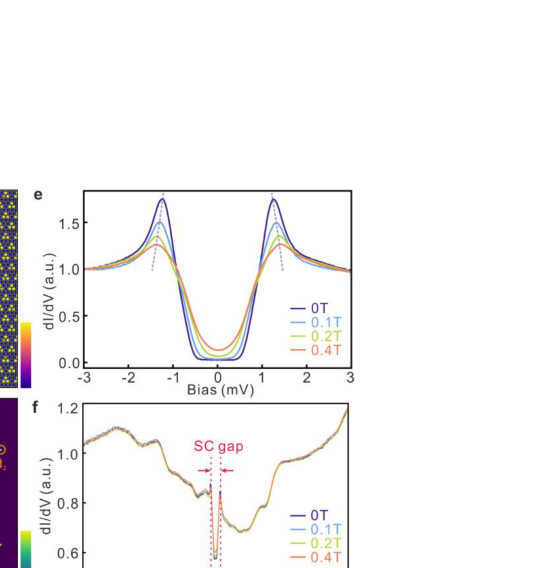
<figcaption class="paper-figure-caption"><b>Fig 1.</b> Figure 1. CDW order and Doppler-shifted superconducting spectra in 2H-NbSe2. a, Atomically resolved topography showing 3×3 CDW superlattice superimposed on 1×1 atomic lattice (V = 3 mV, I = 100 pA). The inset shows a zoomed-in view, where the red rhombus marks the CDW unit cell. Scale bar, 5 nm. b, Fast Fourier transformed (FFT) of the STM image shown in a. The Bragg peaks are indicated by white triangles. The blue and orange circles and the green square mark the CDW peaks. The first Brillouin zone is outlined by a white hexagon. c, Simulated real-space local density of</figcaption>
</figure>
<figure class="paper-figure-card">
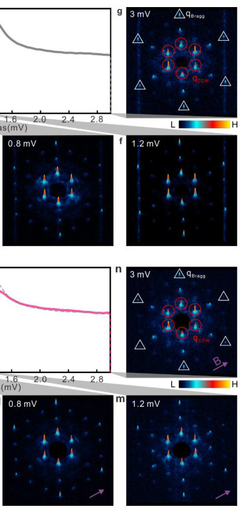
<figcaption class="paper-figure-caption"><b>Fig 2.</b> Figure 2. Supercurrent effect of CDW modulations on Bogoliubov quasiparticles. a, dI/dV spectra taken under zero magnetic field (V = 3 mV, I = 500 pA). b-g, 3D representation of FFTed conductance maps (V = 3 mV, I = 500 pA) taken at indicated energies under zero field. Six CDW peaks (red circles) emerge above 0.5 mV with equal intensity. Bragg peaks are marked by white triangles. h, dI/dV spectra (pink) measured under a 100 mT in-plane magnetic field along Γ-M direction (V = 3 mV, I = 500 pA).</figcaption>
</figure>
<figure class="paper-figure-card">
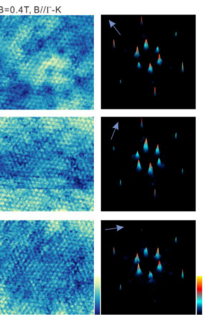
<figcaption class="paper-figure-caption"><b>Fig 3.</b> Figure 3. Manipulation of the CDW modulations on Bogoliubov quasiparticles by in-plane magnetic fields. a-c, Real-space dI/dV maps and the corresponding 3D representation of FFT depicting the CDW modulations on Bogoliubov quasiparticles with magnetic field oriented along the Γ-M directions. Two CDW peaks aligned parallel to the field direction are selectively enhanced. d-f, Replicating a-c with the magnetic field applied along the Γ-K directions, where four CDW peaks closest to the field direction display markedly enhanced intensity. All data were acquired within the same 22×22 nm2 area, at a bias voltage of 0.6 mV and under an in-plane magnetic field of 400 mT (V = 2 mV, I = 1 nA, Vmod =...</figcaption>
</figure>
<figure class="paper-figure-card">
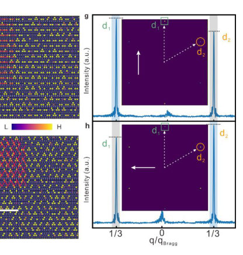
<figcaption class="paper-figure-caption"><b>Fig 4.</b> Figure 4. Numerical simulations of supercurrent effect on CDW mediated patterns a, b, Calculated Bogoliubov quasiparticle dispersions with fields applied along Γ-M and Γ-K directions, respectively. The Doppler shift develops perpendicular to the magnetic field and parallel to the direction of screening supercurrent. Τhe blue and gray planes together represent constant-energy cuts at E = 0.5Δ, where the blue plane highlights regions of the constant-energy contour that become populated by Doppler- shifted quasiparticles, while the gray plane remains gapped. The black hexagon denotes the Brillouin zone, with high-symmetry points indicated. c, d, Constant-energy</figcaption>
</figure>
</div>

<p><strong>Summary.</strong> The research demonstrates that supercurrents flowing in a CDW-intertwined superconductor like $    ext{NbSe}_2$ can actively control the symmetry of the charge density wave. By applying an in-plane magnetic field, the system undergoes a measurable phase transition ($C_{3v}$ to $C_s$) observable through spectroscopic measurements and confirmed by theoretical modeling.</p>
<p><strong>Why it may be interesting.</strong> This work provides an example of how external electromagnetic fields can be used as a tool to selectively tune quantum ground states (CDW order) by coupling to superconducting excitations, which is highly relevant for designing novel electronic materials.</p>
<details>
<summary>Detailed structure</summary>
<p><strong>Main problem.</strong> The study investigates how supercurrents, specifically Meissner currents induced by an in-plane magnetic field, modify the electronic structure of superconductors that are intertwined with Charge Density Wave (CDW) order.</p>
<p><strong>Main result.</strong> The applied supercurrent induces a Doppler shift on Bogoliubov quasiparticles, which drives a symmetry breaking transition in the CDW modulation from $C_{3v}$ to $C_s$ within the superconducting gap. This demonstrates momentum-space engineering control over emergent electronic phases.</p>
<p><strong>Method.</strong> The work combines experimental scanning tunneling spectroscopy (STS) measurements with theoretical modeling using tight-binding Hamiltonians and Bogoliubov-de Gennes equations incorporating Peierls substitution for supercurrent effects.</p>
<p><strong>Model / system.</strong> The physical system is superconducting $    ext{NbSe}<em ext_c="ext{c">2$, which exhibits both s-wave superconductivity ($ ext{T}</em>$) and a $3	imes3$ CDW phase. The model incorporates hopping terms, the CDW potential, and pairing potentials into the BdG Hamiltonian.}} \approx 7.2 ext{ K</p>
<p><strong>Key observables.</strong> Bogoliubov quasiparticle spectra (coherence peaks), CDW modulation symmetry ($C_{3v}$ vs $C_s$), field-dependent peak intensities in Fourier Transforms of LDOS maps.</p>
<p><strong>Important parameters / regimes.</strong> Applied magnetic field strength and direction ($\Gamma-	ext{M}, \Gamma-	ext{K}$ directions); energy window within the superconducting gap ($0.2-0.6 	ext{ meV}$).</p>
<p><strong>Assumptions / limitations.</strong> The authors assume that surface-vortex contributions are negligible during measurements, allowing the field effect to be attributed directly to the interplay between CDW order and Bogoliubov quasiparticles.</p>
<p><strong>Figures summary.</strong> Figures illustrate CDW modulation patterns (real space/FFT) under applied fields, showing symmetry breaking ($C_{3v} 	o C_s$) in the superconducting gap region. Band structures and constant-energy contours confirm the field dependence of the electronic states.</p>
<p><strong>Paper structure.</strong> The paper establishes the theoretical framework by coupling CDW order to superconductivity via a Hamiltonian. It then presents experimental evidence using STS/STS mapping under varying magnetic fields, correlating observed symmetry breaking in the CDW modulation with Doppler shifts calculated from quasiparticle spectra and model calculations.</p>
</details>
<details>
<summary>Abstract</summary>
<p>The energy-momentum (E-k) dispersion of quasiparticles constitutes a fundamental concept in condensed matter systems. The ability to modify the E-k dispersion, exemplified by supercurrent-induced Doppler shifts of Bogoliubov quasiparticle spectra in superconductors, enables manipulation of various emergent quantum properties. However, investigations into the supercurrent effect on superconductors intertwined with charge orders remain scarce. Here, we report that the Meissner current, generated by the diamagnetic response to an applied in-plane magnetic field, can tailor Bogoliubov quasiparticle excitations at the precursor charge density wave (CDW) vectors. Our scanning tunneling spectroscopic imaging reveals a field-driven symmetry breaking of CDW modulations, specifically a C3v-to-Cs transition, in superconducting NbSe2. Model calculations suggest that the observed anisotropy originates from a selective Doppler-shift-induced E-k dispersion reconstruction. Furthermore, altering the field direction enables on-demand tuning of anisotropic CDW modulations and visualization of their momentum-space distribution. These results highlight a novel mechanism for controlling emergent electronic phases through momentum-space engineering.</p>
</details>
<p><sub><a href="#top">↑ back to top</a></sub></p>

<p><a id="paper-2607.21218"></a></p>
<h3 id="emergent-ferromagnetism-in-the-niimath1089math-nbsemath1090math-van-der-waals-heterostructure"><a href="http://arxiv.org/abs/2607.21218v1">Emergent ferromagnetism in the NiI$_2$-NbSe$_2$ van der Waals heterostructure</a></h3>
<p><strong>Authors:</strong> Büşra Gamze Arslan, Mohammad Amini, Ziying Wang, Alessandro Orsini, Jose L. Lado, Adolfo O. Fumega, Robert Drost, Peter Liljeroth<br>
<strong>Type:</strong> both · <strong>Category:</strong> strongly correlated electrons · <strong>PDF:</strong> <a href="https://arxiv.org/pdf/2607.21218v1">https://arxiv.org/pdf/2607.21218v1</a><br>
<strong>Analysis basis:</strong> full PDF text, analyzed in chunks
<strong>Topic relevance:</strong> <code>exotic spin models in light-matter</code> <strong>3/5</strong> · <code>spintronics-quantum-optics interface</code> <strong>3/5</strong> · <code>Kondo &amp; dissipative impurity</code> <strong>2/5</strong> · <code>analog quantum simulation</code> <strong>2/5</strong> · <code>Keldysh / 2PI / non-Gaussian methods</code> <strong>1/5</strong> · <code>correlated / nonlocal dissipation</code> <strong>1/5</strong> · <code>driven-dissipative phase transition</code> <strong>1/5</strong> · <code>methods for driven-dissipative</code> <strong>1/5</strong></p>
<div class="figure-strip-hint">↔ Scroll figures horizontally</div>
<div class="paper-figures-scroll">
<figure class="paper-figure-card">
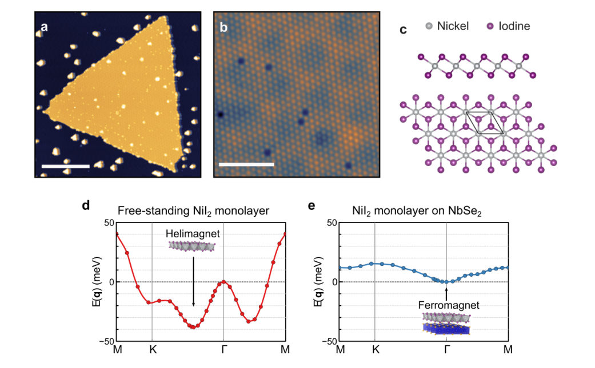
<figcaption class="paper-figure-caption"><b>Fig 1.</b> FIG. 1. Monolayer NiI2 grown by MBE on NbSe2. a, Large area topography image of a NiI2 island (scale bar 50 nm, setpoint 1 V, 5.1 pA). b, Atomic resolution topography image of NiI2 (scale bar 4 nm, setpoint 100 mV, 308 pA). c, The schematic illustration of monolayer NiI2 with a side and top view. The black rhombohedron represents the unit cell of NiI2. d, e, Energy diagrams of free standing NiI2 and NiI2 on NbSe2 substrate, respectively. Free standing NiI2 shows a helimagnetic ground state while NiI2 on NbSe2 is ferromagnetic.</figcaption>
</figure>
<figure class="paper-figure-card">
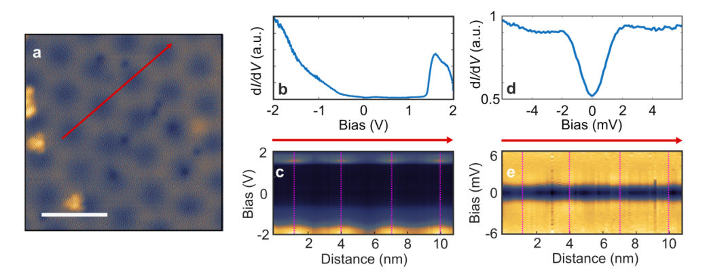
<figcaption class="paper-figure-caption"><b>Fig 2.</b> FIG. 2. Electronic characterization of NiI2 on NbSe2 at 5 K. a, Topography image of NiI2 on NbSe2 (scale bar 5 nm, setpoint 1 V, 315 pA). b, Typical conductance spectrum of NiI2 on NbSe2 between 2 V and −2 V (stabilization parameters 2 V, 500 pA). c, Differential conductance spectra along the line specified with the red arrow in panel a. d, Typical conductance spectrum of the SC gap NbSe2 under NiI2 (stabilization parameters 10 mV, 500 pA). e, Differential conductance spectra along the red line indicated in panel a (10 mV, 500 pA). The magenta dotted lines in panels c and e mark the moir´e period, with a slight shift on the last moir´e period in e due to the drift.</figcaption>
</figure>
<figure class="paper-figure-card">
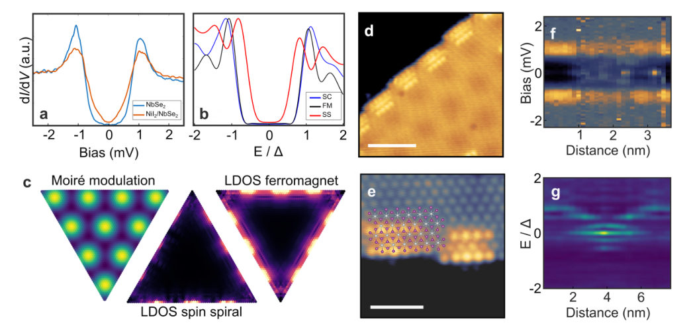
<figcaption class="paper-figure-caption"><b>Fig 3.</b> FIG. 3. a, Differential conductance spectra measured on NbSe2 substrate (blue curve) and on the NiI2 island (orange curve) at 350 mK (stabilization parameters 3 mV, 106.5 pA and 101 pA, respectively, modulation voltage Vm = 50 µV). b, Calculated LDOS states for ferromagnetic (FM, black curve) and spin spiral (SS, red curve) magnetic ground states. Blue curve shows the calculated conductance spectrum on bare NbSe2 (SC). c, Illustration of the moir´e modulation used for the theoretical results, and the calculated LDOS maps for spin spiral and ferromagnetic ground states for a triangular NiI2 island. d, STM image showing the edge contrast and its registry with the moir´e pattern (scale bar 4...</figcaption>
</figure>
</div>

<p><strong>Summary.</strong> This work demonstrates that coupling the multiferroic $    ext{NiI}_2$ monolayer to a superconducting $    ext{NbSe}_2$ substrate drives a fundamental change in its magnetic state, forcing it from a helimagnetic to a ferromagnetic configuration. This control is experimentally verified by observing characteristic Yu-Shiba-Rusinov states using low-temperature scanning tunneling spectroscopy.</p>
<p><strong>Why it may be interesting.</strong> The ability to use superconducting proximity effects (a quantum phenomenon) to tune magnetic ordering in 2D materials provides a powerful platform for realizing controllable quantum magnets relevant to spintronics and topological physics.</p>
<details>
<summary>Detailed structure</summary>
<p><strong>Main problem.</strong> The study aims to demonstrate experimental control over magnetic order, specifically driving a transition from a helimagnetic to a ferromagnetic state in monolayer $ ext{NiI}_2$ using proximity effects from a superconducting substrate.</p>
<p><strong>Main result.</strong> The coupling of $  ext{NiI}_2$ to the $    ext{NbSe}_2$ substrate renormalizes exchange interactions, inducing a robust ferromagnetic ground state confirmed by spectroscopic signatures.</p>
<p><strong>Method.</strong> The research combines low-temperature Scanning Tunneling Microscopy/Spectroscopy ($ ext{STM}/   ext{STS}$) with theoretical modeling using Bogoliubov-de-Gennes Hamiltonians to predict and interpret the electronic states.</p>
<p><strong>Model / system.</strong> The system is a van der Waals heterostructure of monolayer $    ext{NiI}_2$ (a multiferroic) placed on a superconducting $  ext{NbSe}_2$ substrate. The physics involves coupling magnetic exchange interactions ($H_J$) to the intrinsic $s$-wave superconductivity ($H_{SC}$).</p>
<p><strong>Key observables.</strong> Yu-Shiba-Rusinov ($    ext{YSR}$) states within the superconducting gap, reduction of coherence peaks in $ ext{STS}$ spectra, and spatial patterns of Local Density of States ($   ext{LDOS}$).</p>
<p><strong>Important parameters / regimes.</strong> Low temperature (e.g., $350 	ext{ mK}$), proximity coupling strength, and the transition between helimagnetic and ferromagnetic magnetic order.</p>
<p><strong>Assumptions / limitations.</strong> The observed $   ext{YSR}$ states are directly attributable to the substrate-induced renormalization of the magnetic ground state in $   ext{NiI}_2$.</p>
<p><strong>Figures summary.</strong> Figures show atomic structure, $   ext{STS}$ spectra comparing bare and coupled systems (showing gap filling/$ ext{YSR}$ bands), and theoretical predictions for $ ext{LDOS}$ patterns corresponding to different magnetic states.</p>
<p><strong>Paper structure.</strong> The paper establishes the physical system ($   ext{NiI}_2/ ext{NbSe}_2$), uses theory ($ ext{DFT}/   ext{BdG}$) to predict the transition from spin spiral to ferromagnetic state, and validates this prediction using low-temperature $ ext{STS}$ measurements focusing on $    ext{YSR}$ states.</p>
</details>
<details>
<summary>Abstract</summary>
<p>Multiferroicity arising from non-collinear spin textures and strong spin-orbit interactions offers a route to magnetoelectric functionality in the monolayer limit. Although theory predicts that the properties of monolayer multiferroics can be tuned by strain, gating, or proximity effects, experimental demonstrations of such control remain scarce. Here we show that the magnetic ground state of monolayer NiI$_2$, a prototypical two-dimensional multiferroic, is altered by proximity to a superconducting NbSe$_2$ substrate. Using low-temperature scanning tunnelling microscopy (STM) and spectroscopy (STS), we show that the metallic substrate renormalizes the exchange interactions within NiI$_2$ and drives it into a ferromagnetic ground state. This can be visualized by probing the Yu-Shiba-Rusinov (YSR) states within the superconducting gap of the NbSe$_2$ substrate. Our results establish YSR states as an in situ probe of two-dimensional magnetism and demonstrate substrate engineering as a means of controlling magnetic order in atomically thin materials.</p>
</details>
<p><sub><a href="#top">↑ back to top</a></sub></p>

<p><a id="paper-2607.21092"></a></p>
<h3 id="tunnel-magnetoresistance-effect-with-a-cr-doped-math1100math-altermagnet"><a href="http://arxiv.org/abs/2607.21092v1">Tunnel magnetoresistance effect with a Cr-doped $\mathrm{RuO_{2}}(110)$ altermagnet</a></h3>
<p><strong>Authors:</strong> Katsuhiro Tanaka, Takuya Nomoto, Ryotaro Arita<br>
<strong>Type:</strong> theory · <strong>Category:</strong> other · <strong>PDF:</strong> <a href="https://arxiv.org/pdf/2607.21092v1">https://arxiv.org/pdf/2607.21092v1</a><br>
<strong>Analysis basis:</strong> full PDF text, analyzed in chunks
<strong>Topic relevance:</strong> <code>spintronics-quantum-optics interface</code> <strong>3/5</strong> · <code>Keldysh / 2PI / non-Gaussian methods</code> <strong>1/5</strong> · <code>Kondo &amp; dissipative impurity</code> <strong>1/5</strong> · <code>analog quantum simulation</code> <strong>1/5</strong> · <code>exotic spin models in light-matter</code> <strong>1/5</strong> · <code>methods for driven-dissipative</code> <strong>1/5</strong> · <code>non-equilibrium dynamics</code> <strong>1/5</strong></p>
<div class="figure-strip-hint">↔ Scroll figures horizontally</div>
<div class="paper-figures-scroll">
<figure class="paper-figure-card">
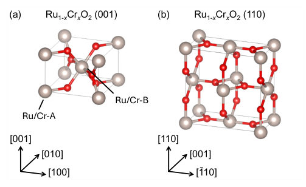
<figcaption class="paper-figure-caption"><b>Fig 1.</b> FIG. 1. (a) Crystal structures of the rutile Ru1−xCrxO2 prim- itive cell. (b) Crystal structure of the rutile Ru1−xCrxO2 stacked along [110]-direction.</figcaption>
</figure>
<figure class="paper-figure-card">
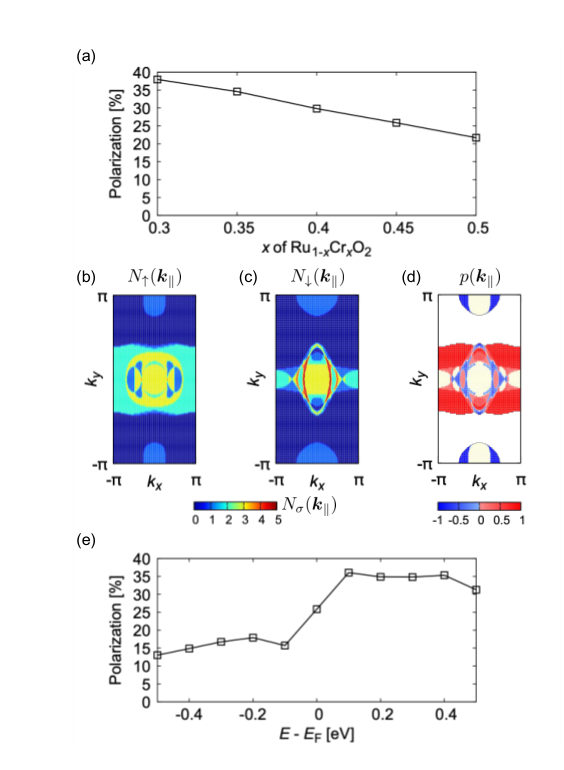
<figcaption class="paper-figure-caption"><b>Fig 2.</b> FIG. 2. Calculation results of the spin polarization in the bulk Ru1−xCrxO2(110) systems. (a) Cr-concentration dependence of the polarization ptot (Eq. (3)) at E = EF. (b), (c) In- plane momentum dependence of the number of conduction channels for (b) up and (c) down spins at E = EF for the x = 0.45 system. (d) In-plane momentum dependence of the polarization, p(k∥) (Eq. (2)), corresponding to (b) and (c). (e) Energy dependence of ptot for the x = 0.45 system. Note that the k-mesh is 151 × 151 at E = EF and 101 × 101 for others.</figcaption>
</figure>
<figure class="paper-figure-card">
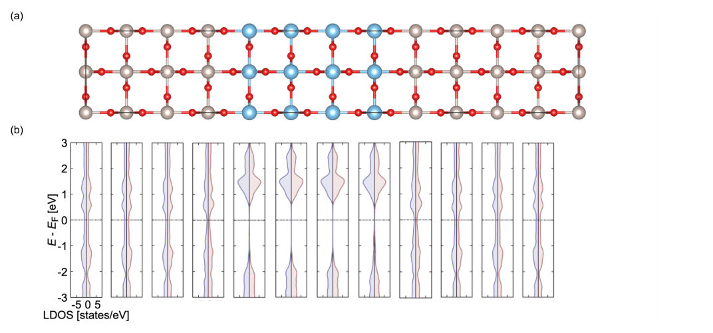
<figcaption class="paper-figure-caption"><b>Fig 3.</b> FIG. 3. (a) Crystal structure of the Ru1−xCrxO2(110)/TiO2(110)/Ru1−xCrxO2(110) tunnel junction with four monolayers of TiO2(110). Specifically, the scattering region used in the calculations is shown. (b) Density of states (DOS) of the scattering region with the parallel configuration for the x = 0.45 system. Each DOS contains the projected DOS of the layers with Ru/Ti atoms and the oxygen atoms nearby.</figcaption>
</figure>
<figure class="paper-figure-card">
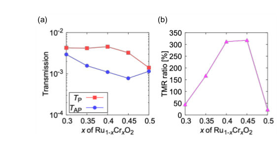
<figcaption class="paper-figure-caption"><b>Fig 4.</b> FIG. 4. (a) Cr-doping amount dependence of the total trans- mission for the parallel and antiparallel configurations, TP and TAP, respectively, at E = EF with four monolayers of TiO2(110). (b) Cr-doping amount dependence of the TMR ratio calculated by (TP −TAP) /TAP ×100% corresponding to (a).</figcaption>
</figure>
<figure class="paper-figure-card">
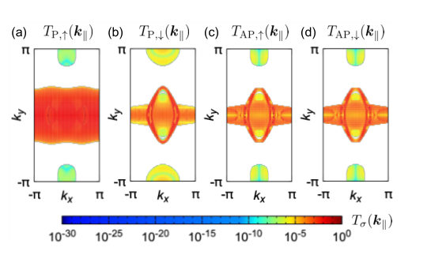
<figcaption class="paper-figure-caption"><b>Fig 5.</b> FIG. 5. Momentum resolved transmission at E = EF for the x = 0.45 system with four monolayers of TiO2(110). (a), (b) Transmission for the parallel configuration with (a) up and (b) down spins. (c), (d) Transmission for the antiparallel configuration with (c) up and (d) down spins.</figcaption>
</figure>
</div>

<p><strong>Summary.</strong> This theoretical study calculates the Tunnel Magnetoresistance (TMR) effect in a doped altermagnet $\mathrm{Ru}_{1-x}\mathrm{Cr}_x\mathrm{O}_2(110)$ junction. Using DFT, the authors demonstrate that a finite TMR signal emerges due to spin polarization originating from the crystal structure and interfacial effects. This work advances understanding of spintronics in antiferromagnetic oxides.</p>
<p><strong>Why it may be interesting.</strong> While focused on condensed matter magnetism, the calculation of electronic transport properties (TMR) using first-principles methods is foundational for understanding quantum phenomena in solid-state devices, which has parallels with open quantum system modeling.</p>
<details>
<summary>Detailed structure</summary>
<p><strong>Main problem.</strong> The study investigates the Tunnel Magnetoresistance (TMR) effect occurring in antiferromagnetic tunnel junctions using doped altermagnets.</p>
<p><strong>Main result.</strong> A finite TMR effect is predicted and calculated for $\mathrm{Ru}_{1-x}\mathrm{Cr}_x\mathrm{O}_2(110)/\mathrm{TiO}_2(110)/\mathrm{Ru}_{1-x}\mathrm{Cr}_x\mathrm{O}_2(110)$ junctions, attributed to momentum-dependent spin polarization and interfacial magnetic structures.</p>
<p><strong>Method.</strong> The research employs first-principles calculations (DFT) combined with the scattering theory method and Landauer–Büttiker formalism to model tunneling transport.</p>
<p><strong>Model / system.</strong> The system is a Magnetic Tunnel Junction (MTJ) composed of $\mathrm{Ru}_{1-x}\mathrm{Cr}_x\mathrm{O}_2(110)$ altermagnets separated by a $\mathrm{TiO}_2(110)$ barrier. The material properties are derived from first-principles calculations using the virtual crystal approximation for Cr doping.</p>
<p><strong>Key observables.</strong> Total spin polarization ($p_{	ext{tot}}$), momentum-dependent spin polarization $p(\mathbf{k}_{\parallel})$, total transmission ($\mathrm{T}_{	ext{P}}, \mathrm{T}_{	ext{AP}}$), and the TMR ratio.</p>
<p><strong>Important parameters / regimes.</strong> Cr doping concentration ($x$), crystal orientation ($(110)$ vs $(001)$), and Fermi energy ($E_{	ext{F}}$).</p>
<p><strong>Assumptions / limitations.</strong> The analysis assumes that the TMR effect arises from a combination of bulk spin-polarized current, momentum dependence, and interfacial magnetic structures.</p>
<p><strong>Figures summary.</strong> Figures illustrate the crystal structures for different orientations, show how total spin polarization changes with Cr concentration, map out the momentum dependence of spin polarization, and plot the calculated TMR ratio versus doping concentration and barrier thickness.</p>
<p><strong>Paper structure.</strong> The paper first establishes the theoretical basis by showing that the $(110)$ orientation allows for a finite bulk spin-polarization in the altermagnet. It then applies this to model the MTJ structure, calculating the TMR effect based on tunneling transport theory and analyzing its dependence on doping and barrier thickness.</p>
</details>
<details>
<summary>Abstract</summary>
<p>Antiferromagnets can have a finite spin-polarization in the momentum space when their magnetic structure breaks the macroscopic time-reversal symmetry. This spin-polarization can produce a spin-polarized electric current even in antiferromagnets with vanishingly small net magnetizaton, which supports the antiferromagentic tunnel magnetoresistance (TMR) effect. In this paper, using first-principles calculations, we study the TMR effect with a doped altermagnet $\mathrm{Ru}_{1-x}\mathrm{Cr}_{x}\mathrm{O}_{2}$ with $(110)$ orientation, whose collinear antiferromagnetic structure breaks the time-reversal symmetry macroscopically. The momentum-dependent spin-polarization combined with the $(110)$ crystal orientation makes the electric current spin-polarized through bulk $\mathrm{Ru}_{1-x}\mathrm{Cr}_{x}\mathrm{O}_{2}(110)$. We further calculate the TMR effect in the $\mathrm{Ru}_{1-x}\mathrm{Cr}_{x}\mathrm{O}_{2}(110)/\mathrm{TiO_{2}}(110)/\mathrm{Ru}_{1-x}\mathrm{Cr}_{x}\mathrm{O}_{2}(110)$ tunnel junction and show that a finite TMR effect emerges. Based on the analysis of the tunneling transport, the TMR effect is attributed to the spin polarized tunneling transport with momentum dependence and the interfacial magnetic structures, as well as the spin-polarized electric current in a bulk form of $\mathrm{Ru}_{1-x}\mathrm{Cr}_{x}\mathrm{O}_{2}(110)$.</p>
</details>
<p><sub><a href="#top">↑ back to top</a></sub></p>

<p><a id="paper-2607.21301"></a></p>
<h3 id="visualization-of-defect-electronic-states-in-layered-semiconductor-crsbr"><a href="http://arxiv.org/abs/2607.21301v1">Visualization of Defect Electronic States in Layered Semiconductor CrSBr</a></h3>
<p><strong>Authors:</strong> Jonathan Brunette, Joost Aretz, Kiyoung Jo, Aljoscha Soll, Zdeněk Sofer, Malte Rösner, Nathan Guisinger, Adina Luican-Mayer<br>
<strong>Type:</strong> both · <strong>Category:</strong> other · <strong>PDF:</strong> <a href="https://arxiv.org/pdf/2607.21301v1">https://arxiv.org/pdf/2607.21301v1</a><br>
<strong>Analysis basis:</strong> full PDF text, analyzed in chunks
<strong>Topic relevance:</strong> <code>exotic spin models in light-matter</code> <strong>3/5</strong> · <code>spintronics-quantum-optics interface</code> <strong>3/5</strong> · <code>Keldysh / 2PI / non-Gaussian methods</code> <strong>1/5</strong> · <code>Kondo &amp; dissipative impurity</code> <strong>1/5</strong></p>
<div class="figure-strip-hint">↔ Scroll figures horizontally</div>
<div class="paper-figures-scroll">
<figure class="paper-figure-card">
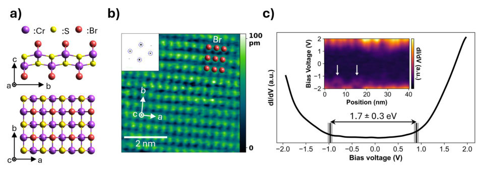
<figcaption class="paper-figure-caption"><b>Fig 1.</b> Figure 1. a) CrSBr crystal structure. b) STM topographic image of bulk CrSBr showing atomic</figcaption>
</figure>
<figure class="paper-figure-card">

<figcaption class="paper-figure-caption"><b>Fig 2.</b> Figure 1b, where the rectangular symmetry is apparent along the a and b directions. The symmetry</figcaption>
</figure>
<figure class="paper-figure-card">

<figcaption class="paper-figure-caption"><b>Fig 3.</b> Figure 1c shows a band gap of 1.7 ± 0.3 eV, in agreement with existing measurements and</figcaption>
</figure>
<figure class="paper-figure-card">
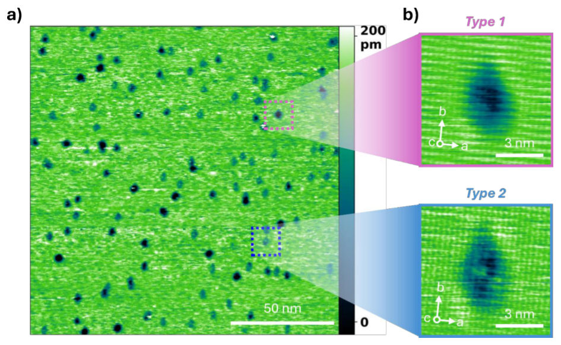
<figcaption class="paper-figure-caption"><b>Fig 4.</b> Figure 2. a) Typical STM topographic map (VB = -0.55 V, IS = -50 pA). Two primary defect types</figcaption>
</figure>
<figure class="paper-figure-card">
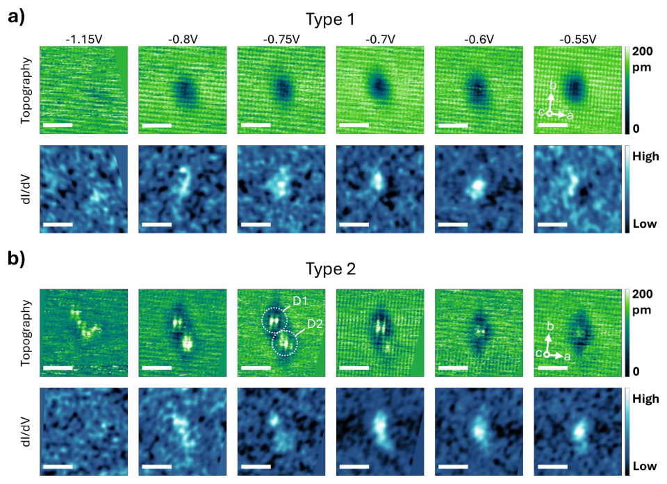
<figcaption class="paper-figure-caption"><b>Fig 5.</b> Figure 3. Series of STM topographs and corresponding dI/dV maps acquired from -0.55V to -</figcaption>
</figure>
</div>

<p><strong>Summary.</strong> This work uses STM/STS on $    ext{CrSBr}$ to investigate intrinsic defects, finding two distinct defect types. By comparing these experimental observations with DFT simulations, the authors propose that the Type 2 defect is structurally equivalent to a $b$-axis-aligned double sulfur vacancy ($   ext{V}_2    ext{S}$). This advances understanding of how native defects dictate the electronic structure and potential optical properties of layered semiconductors.</p>
<p><strong>Why it may be interesting.</strong> While primarily condensed matter physics, the detailed mapping of localized electronic states induced by vacancies provides a model system for studying how point defects modify band edges and potentially enable tunable emission in 2D materials, relevant to quantum emitters.</p>
<details>
<summary>Detailed structure</summary>
<p><strong>Main problem.</strong> The study aims to understand the microscopic structure, electronic properties, and nature of intrinsic defects within the layered magnetic semiconductor $    ext{CrSBr}$.</p>
<p><strong>Main result.</strong> Experimental STM/STS measurements strongly suggest that a common defect corresponds to a $b$-axis-aligned double sulfur vacancy ($    ext{V}_2    ext{S}$), which is supported by qualitative agreement with DFT simulations.</p>
<p><strong>Method.</strong> The research combines Scanning Tunneling Microscopy/Spectroscopy (STM/STS) experiments at atomic resolution with first-principles Density Functional Theory ($  ext{DFT}+   ext{U}$) calculations.</p>
<p><strong>Model / system.</strong> The physical system is $    ext{CrSBr}$, a layered magnetic semiconductor. The analysis focuses on characterizing defect states by comparing experimental electronic signatures (dI/dV maps) against theoretical predictions for various vacancy types.</p>
<p><strong>Key observables.</strong> Electronic features near the valence band edge, localized electronic states centered on defects, and topographic contrast changes observed across varying bias voltages.</p>
<p><strong>Important parameters / regimes.</strong> The material exhibits a bulk band gap of $1.7 \pm 0.3 	ext{ eV}$. Key defect candidates include $b$-axis-aligned double sulfur vacancies ($   ext{V}_2    ext{S}$).</p>
<p><strong>Assumptions / limitations.</strong> The comparison between simulated and experimental STM signatures is qualitative, and $   ext{DFT}+   ext{U}$ calculations are acknowledged to be approximations for weakly screened semiconductors.</p>
<p><strong>Figures summary.</strong> Figures show bulk crystal structure, topographic maps identifying two defect types (Type 1 and Type 2), and comparisons of calculated band structures/simulated STM images against experimental measurements on the Type 2 defect.</p>
<p><strong>Paper structure.</strong> The paper systematically uses STM to map defects, analyzes electronic signatures via STS across bias ranges, and then employs DFT calculations to model specific vacancy types ($  ext{V}_2    ext{S}$) for direct comparison with the observed defect states.</p>
</details>
<details>
<summary>Abstract</summary>
<p>Chromium sulfur bromide (CrSBr) is a layered magnetic semiconducting material combining a rich magnetic phase diagram with axis-dependent electronic and optical properties. While defects in CrSBr have been shown to affect magnetic order and excitonic responses, their microscopic nature, atomic structure, and electronic properties are not yet fully understood. In this work, we use scanning tunneling microscopy/spectroscopy (STM/STS) to explore the structure and electronic signatures of two prominent defects in bulk CrSBr. Their structure reflects the symmetries of the underlying lattice, with electronic features near the valence band edge. By comparing experimental data with ab initio simulated STM images, we infer that a common defect corresponds to a b-axis-aligned double sulfur vacancy, in line with findings from a recent growth analysis study. This result advances our understanding of the role of intrinsic defects in shaping the electronic structure of CrSBr.</p>
</details>
<p><sub><a href="#top">↑ back to top</a></sub></p>

<p><a id="paper-2607.21147"></a></p>
<h3 id="magnetically-memorable-inductance-in-superconducting-multilayer-resonators"><a href="http://arxiv.org/abs/2607.21147v1">Magnetically memorable inductance in superconducting multilayer resonators</a></h3>
<p><strong>Authors:</strong> R. Tyumenev, D. S. Kalashnikov, B. V. Fradkin, A. A. Neilo, A. G. Shishkin, N. V. Klenov, I. I. Soloviev, A. A. Golubov, M. Yu. Kupriyanov, I. A. Golovchanskiy, V. S. Stolyarov, A. S. Sidorenko, S. V. Bakurskiy<br>
<strong>Type:</strong> experiment · <strong>Category:</strong> disordered systems and neural networks · <strong>PDF:</strong> <a href="https://arxiv.org/pdf/2607.21147v1">https://arxiv.org/pdf/2607.21147v1</a><br>
<strong>Analysis basis:</strong> full PDF text, analyzed in chunks
<strong>Topic relevance:</strong> <code>spintronics-quantum-optics interface</code> <strong>3/5</strong> · <code>Kondo &amp; dissipative impurity</code> <strong>1/5</strong> · <code>QC/QI experiment</code> <strong>1/5</strong> · <code>exotic spin models in light-matter</code> <strong>1/5</strong></p>
<div class="figure-strip-hint">↔ Scroll figures horizontally</div>
<div class="paper-figures-scroll">
<figure class="paper-figure-card">
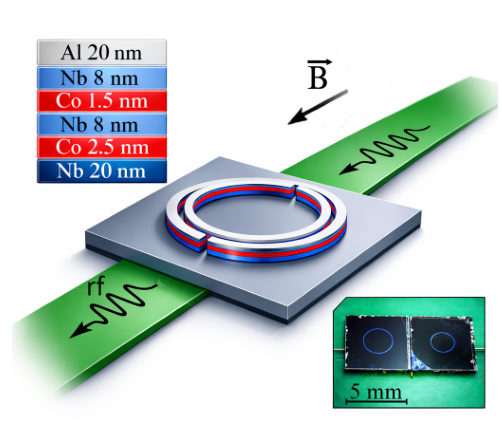
<figcaption class="paper-figure-caption"><b>Fig 1.</b> Figure 1. Schematic illustration of the studied sample. A multilayer split-ring resonator (SRR) on a Si (100) substrate is placed on top of the central line of a planar waveguide (strip- line type). The external magnetic field B is applied along the waveguide. The top-left inset shows a cross-sectional sketch of the sample with the actual layer thicknesses. The bottom- right inset shows a photograph (top view) of the measured samples.</figcaption>
</figure>
<figure class="paper-figure-card">
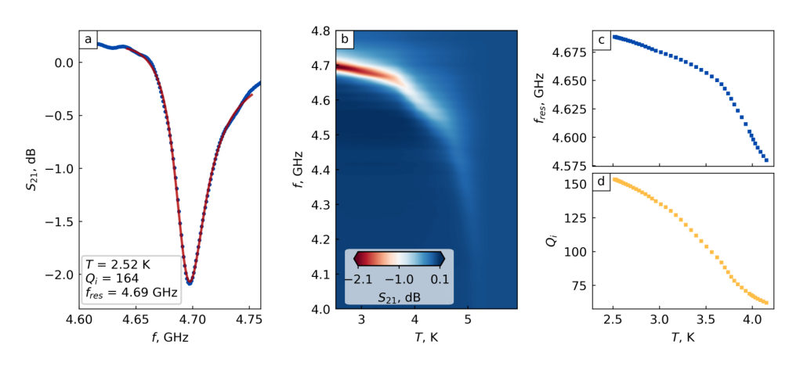
<figcaption class="paper-figure-caption"><b>Fig 2.</b> Figure 2. Temperature dependences of the parameters of the 4.7 GHz multilayer resonator. (a) Transmission coefficient S21 of the resonator at a fixed temperature of 2.5 K after background subtraction. The red curve shows a fit using the asymmetric Lorentzian profile (1). The resonator parameters obtained from the fit are indicated in the legend. (b) Temperature dependence of S21(f). (c) Resonant frequency and (d) internal quality factor of the resonator as functions of temperature.</figcaption>
</figure>
<figure class="paper-figure-card">
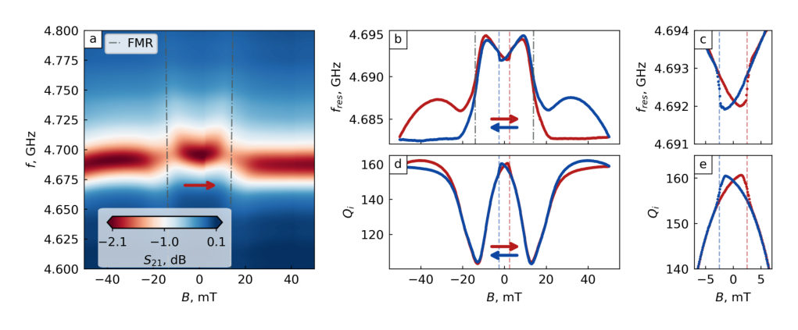
<figcaption class="paper-figure-caption"><b>Fig 3.</b> Figure 3. Dependence of the parameters of the 4.7 GHz multilayer resonator on the external magnetic field. (a) Measured transmission coefficient S21 as a function of the magnetic field after background subtraction. The dotted-dashed line indicates the FMR dependence. (b) Resonant frequency and (d) internal quality factor, extracted using the fit from Eq. (1), as functions of the external magnetic field. The dashed line marks the field at which the thinner ferromagnetic layer reverses, resulting in an antiparallel configuration. (c) Resonant frequency and (e) internal quality factor in an expanded view of the region corresponding to the reversal of the thin layer.</figcaption>
</figure>
<figure class="paper-figure-card">
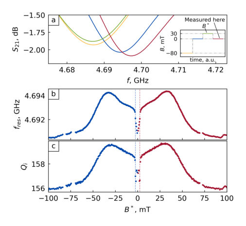
<figcaption class="paper-figure-caption"><b>Fig 4.</b> Figure 4. Characteristics of the 4.7 GHz multilayer res- onator depending on the history of the applied external mag- netic field. (a) Transmission coefficient S21 under a field B1 = −80 mT (yellow curve); after switching the field off, the sample is in the P-state (blue curve); under a field B = 30 mT (green curve); and after switching the field off, the sample is in the AP-state (red curve). The inset shows the history of the applied external magnetic field. Dependence of the reso- nant frequency (b) and the internal quality factor (c) of the multilayer resonator, measured at zero field after full magneti- zation reversal and the temporary application of a finite field B∗(indicated on the...</figcaption>
</figure>
<figure class="paper-figure-card">
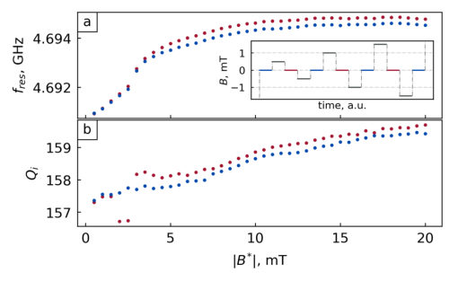
<figcaption class="paper-figure-caption"><b>Fig 5.</b> Figure 5. Dependence of the resonant frequency (a) and the internal quality factor (b) of the multilayer resonator, mea- sured at zero field after full magnetization reversal and the temporary application of a finite field B, whose value is in- dicated within the panel. Blue (red) points show the mea- surement results at zero field after the temporary application of a field in the negative (positive) direction. The inset il- lustrates the history of the applied external magnetic field. After applying a field of 2.5 mT, at which the reversal of the thinner ferromagnetic layer occurs, a sharp jump in the reso- nant frequency change of approximately 0.7 MHz is observed for both the red and...</figcaption>
</figure>
</div>

<p><strong>Summary.</strong> The authors fabricated superconducting multilayer resonators incorporating ferromagnetic layers to create magnetic memory elements. They experimentally demonstrated a non-volatile shift in the resonant frequency upon reversing the magnetization of the Co layers, confirming a spin-valve effect. This work establishes these structures as promising components for building tunable inductive circuits for neuromorphic and quantum computing applications.</p>
<p><strong>Why it may be interesting.</strong> This work directly bridges superconducting electronics with spintronics, creating tunable inductive elements whose state is controlled magnetically—a key concept for implementing artificial synapses in quantum/neuromorphic computing architectures.</p>
<details>
<summary>Detailed structure</summary>
<p><strong>Main problem.</strong> The research aims to demonstrate a non-volatile spin-valve effect on superconducting multilayer resonators, establishing them as viable field-programmable inductive elements for neuromorphic circuits.</p>
<p><strong>Main result.</strong> A reproducible shift in the resonant frequency ($\Delta f$ up to 4 MHz) was observed upon magnetization reversal at zero applied magnetic field, confirming the magnetic memory of the structure.</p>
<p><strong>Method.</strong> Microwave characterization using transmission coefficient measurements ($S_{21}(f)$) on fabricated split-ring resonators (SRRs).</p>
<p><strong>Model / system.</strong> The physical platform is a superconducting multilayer resonator ($  ext{Nb}/    ext{Co}/    ext{Nb}/    ext{Co}/    ext{Nb}/    ext{Al}$) utilizing superconductor-ferromagnet hybrid structures. The physics is modeled using the Usadel equations.</p>
<p><strong>Key observables.</strong> Resonant frequency shift ($\Delta f$), internal quality factor ($Q_i$), and kinetic inductance contrast between parallel and antiparallel magnetic states.</p>
<p><strong>Important parameters / regimes.</strong> Operating temperature (2.5 K), resonant frequency range (4–7 GHz), and the magnitude of the frequency shift ($\sim 4 	ext{ MHz}$).</p>
<p><strong>Assumptions / limitations.</strong> The analysis assumes that the observed effects are governed by changes in kinetic inductance due to magnetic state, and that the inclusion of an Al overlayer improves reproducibility.</p>
<p><strong>Figures summary.</strong> Figures illustrate temperature dependence ($T$ vs $f_{	ext{res}}, Q_l$) and field dependence ($B$ vs $S_{21}, f_{	ext{res}}$), highlighting FMR anticrossings, sharp jumps at low fields, and the memory effect upon controlled magnetization reversal.</p>
<p><strong>Paper structure.</strong> The paper progresses from demonstrating the basic spin-valve effect via frequency shifts to quantifying the enhancement provided by an aluminum shunt layer, comparing results against theoretical models (Usadel equations) and control samples.</p>
</details>
<details>
<summary>Abstract</summary>
<p>Superconductor-ferromagnet hybrid structures with tunable kinetic inductance are promising elements for neuromorphic and quantum computing circuits. We report the fabrication and microwave characterization of split-ring resonators based on Nb/Co/Nb/Co/Nb/Al spin-trigger multilayers and demonstrate a non-volatile spin-valve effect on their resonant properties. Reversal of the relative magnetization orientation of the cobalt layers produces a reproducible shift of the resonant frequency up to 4 MHz at zero applied magnetic field, corresponding to a change in the kinetic inductance of the structure. The incorporation of a proximitized aluminum overlayer is shown to enhance the inductance contrast between the parallel and antiparallel magnetic states by a factor of approximately three relative to structures without this layer. The experimental results are in quantitative agreement with a microscopic model based on the Usadel equations. The demonstrated magnetic memory of the resonant frequency at zero field establishes spin-trigger multilayers as viable field-programmable inductive elements for superconducting digital and neuromorphic circuits.</p>
</details>
<p><sub><a href="#top">↑ back to top</a></sub></p>

<p><a id="paper-2607.21221"></a></p>
<h3 id="circular-phonon-dichroism-in-math1132math-wave-altermagnets"><a href="http://arxiv.org/abs/2607.21221v1">Circular phonon dichroism in $d$-wave altermagnets</a></h3>
<p><strong>Authors:</strong> Ding Li, Tao Qin, Jianhui Zhou<br>
<strong>Type:</strong> theory · <strong>Category:</strong> other · <strong>PDF:</strong> <a href="https://arxiv.org/pdf/2607.21221v1">https://arxiv.org/pdf/2607.21221v1</a><br>
<strong>Analysis basis:</strong> full PDF text, analyzed in chunks
<strong>Topic relevance:</strong> <code>spintronics-quantum-optics interface</code> <strong>3/5</strong> · <code>exotic spin models in light-matter</code> <strong>1/5</strong></p>
<div class="figure-strip-hint">↔ Scroll figures horizontally</div>
<div class="paper-figures-scroll">
<figure class="paper-figure-card">
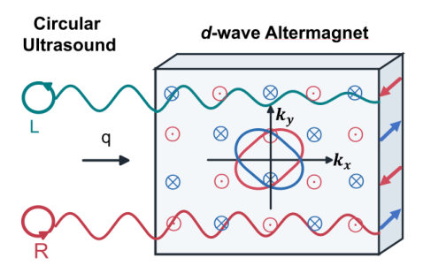
<figcaption class="paper-figure-caption"><b>Fig 1.</b> Figure 1. Dichroic attenuation of circular ultrasound through an altermagnetic material. The red and blue circles denote the local magnetic moments, which are perpendicular to the page and antiparallel to one another. Equal-amplitude left- and right-circular ultrasound are transmitted separately through a d-wave altermagnet with a static alternating-spin lattice. The red and blue contours schematically depict the d-wave altermagnetic Fermi-surface splitting, which vanishes on the crystalline axes and changes sign between adjacent quadrants. The unequal transmitted amplitudes correspond to γL ̸= γR. At fixed and calibrated (q, ω), the sign of the attenuation difference distinguishes opposite...</figcaption>
</figure>
<figure class="paper-figure-card">
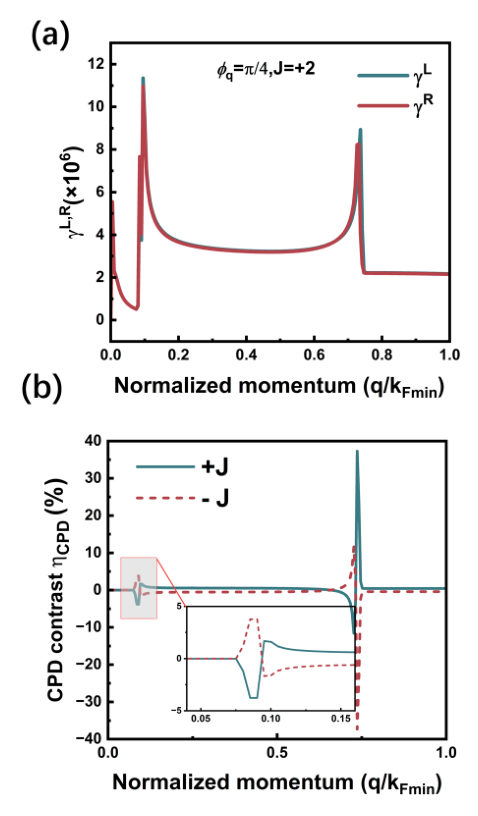
<figcaption class="paper-figure-caption"><b>Fig 2.</b> Figure 2. Radial circular-channel absorption and CPD asym- metry ratio. (a) Momentum dependence of γL and γR(1/s) along ϕq = π/4 for J = 2 eV. (b) Normalized CPD asymme- try ratio ηCPD along the same direction for J = ±2 eV. Solid and dashed curves denote J = 2 eV and J = −2 eV, respec- tively. The inset enlarges the low-q resonance region.</figcaption>
</figure>
<figure class="paper-figure-card">
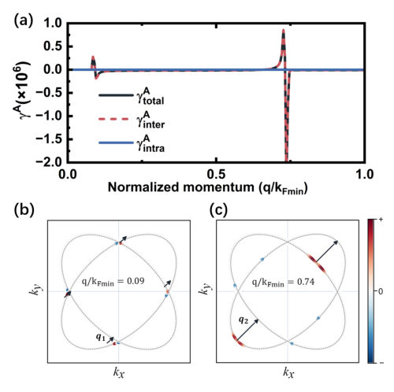
<figcaption class="paper-figure-caption"><b>Fig 3.</b> Figure 3. Channel and k-resolved origin of the radial res- onances. (a) Channel-resolved γA(1/s) for J = 2 eV: to- tal (solid black), inter-band (dashed red), and intra-band (solid blue). Inter-band kernel gA(k, q) of γA plotted as sgn(gA)|gA/gA,max| on the SOC Fermi surfaces for (b) q1/kF,min = 0.09 and (c) q2/kF,min = 0.74. Red and blue denote positive and negative values after separate panel nor- malization. Dash line show the SOC Fermi surfaces. Arrows indicate representative near-Fermi transitions ki →ki + q1,2 selected by the corresponding peak momenta.</figcaption>
</figure>
<figure class="paper-figure-card">
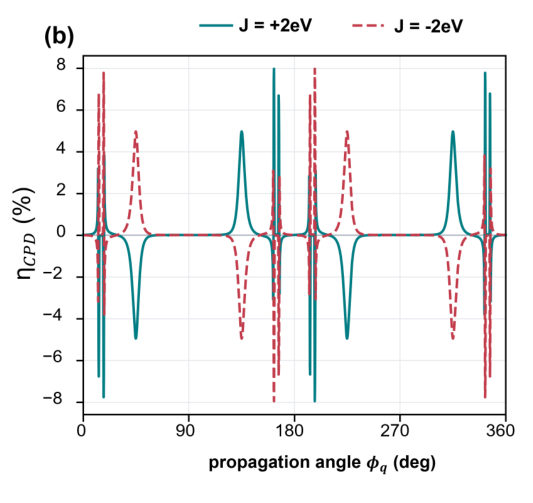
<figcaption class="paper-figure-caption"><b>Fig 4.</b> Figure 4. Directional scan of the finite-momentum CPD for J = ±2 eV. The momentum magnitude is fixed at |q|/kF,min = 0.72.</figcaption>
</figure>
</div>

<p><strong>Summary.</strong> The authors propose using finite-momentum circular phonon dichroism (CPD) as a highly sensitive and direct diagnostic tool to determine the orientation of the Néel vector in $d$-wave altermagnets. By exploiting symmetry constraints, they show that CPD's sign reverses when the magnetic order is reversed, offering a practical acoustic method for characterizing these complex antiferromagnetic materials.</p>
<p><strong>Why it may be interesting.</strong> This work connects macroscopic acoustic measurements (ultrasound) directly to microscopic magnetic order parameters ($\mathbf{N}$), providing a novel, non-magnetic readout mechanism relevant for spintronics applications in correlated materials.</p>
<details>
<summary>Detailed structure</summary>
<p><strong>Main problem.</strong> The primary challenge is developing a direct, measurable technique to determine the orientation of the Néel vector ($\mathbf{N}$) in altermagnets because their magnetic order is otherwise difficult to read out.</p>
<p><strong>Main result.</strong> Finite-momentum circular phonon dichroism (CPD) acts as a direct and sign-sensitive probe for the Néel vector, showing that the signal reverses when $\mathbf{N}$ is flipped.</p>
<p><strong>Method.</strong> The theory calculates CPD by analyzing the difference between left ($\gamma_L$) and right ($\gamma_R$) circular ultrasound amplitudes, relating it to the Hall-like component of the electron-phonon coupling tensor ($\eta_{	ext{CPD}} = -\gamma_A / \gamma_D$).</p>
<p><strong>Model / system.</strong> The study focuses on two-dimensional ($d$-wave) altermagnets. The electronic structure is modeled using a minimal two-band Hamiltonian incorporating $d$-wave exchange splitting ($J$) and Rashba spin-orbit coupling ($\lambda$).</p>
<p><strong>Key observables.</strong> Circular phonon dichroism asymmetry ratio ($\eta_{	ext{CPD}}$), which is expected to change sign upon Néel vector reversal.</p>
<p><strong>Important parameters / regimes.</strong> The magnitude of the dichroic signal, exemplified by $|\eta_{	ext{CPD}}| = 37.3\%$, and the dependence on phonon wave vectors ($q$).</p>
<p><strong>Assumptions / limitations.</strong> The analysis relies on combining Onsager reciprocity with $C_{2z}$ lattice symmetry to predict the sign change of CPD upon Néel vector reversal.</p>
<p><strong>Figures summary.</strong> Figures illustrate the concept by showing unequal transmitted amplitudes ($\gamma_L 
eq \gamma_R$) for opposite $\mathbf{N}$ orientations, and quantify the dichroic asymmetry ratio across various momentum cuts.</p>
<p><strong>Paper structure.</strong> The paper establishes a theoretical framework using electron-phonon coupling to define CPD. It derives symmetry constraints based on crystal and time-reversal symmetries, calculates the signal originating from interband transitions, and presents quantitative results confirming its utility as an orientation probe.</p>
</details>
<details>
<summary>Abstract</summary>
<p>Altermagnets, a new class of collinear antiferromagnets, exhibit momentum-dependent spin splitting and offer compelling advantages for antiferromagnetic spintronics. However, the magnetic order is intrinsically difficult to read out, which hinders practical applications. We propose finite-momentum circular phonon dichroism as a direct probe of Néel vector in two-dimensional $d$-wave altermagnets. Combining Onsager reciprocity with $C_{2z}$ lattice symmetry, we find that the dichroic signal reverses sign when the Néel vector is flipped for the in-plane phonon wave vectors. Moreover, a channel-resolved decomposition identifies the circular phonon dichroism originates from the interband coherent transitions. Representative finite-momentum cuts show pronounced dichroic asymmetric ratio, with $|η_{\mathrm{CPD}}|=37.3\%$. Our work reveals that the circular-ultrasound absorption acts as a direct probe of the Néel vector of $d$-wave altermagnets.</p>
</details>
<p><sub><a href="#top">↑ back to top</a></sub></p>

<p><a id="paper-2607.20974"></a></p>
<h3 id="evidence-for-fully-gapped-superconductivity-in-bcs-superconductor-nibi3"><a href="http://arxiv.org/abs/2607.20974v1">Evidence for fully-gapped superconductivity in BCS superconductor NiBi3</a></h3>
<p><strong>Authors:</strong> Atul Gangwar, Kunal Yadav, S. Patnaik, Sandip Chatterjee<br>
<strong>Type:</strong> experiment · <strong>Category:</strong> quantum gases · <strong>PDF:</strong> <a href="https://arxiv.org/pdf/2607.20974v1">https://arxiv.org/pdf/2607.20974v1</a><br>
<strong>Analysis basis:</strong> full PDF text, analyzed in chunks
<strong>Topic relevance:</strong> <code>analog quantum simulation</code> <strong>2/5</strong> · <code>Keldysh / 2PI / non-Gaussian methods</code> <strong>1/5</strong></p>
<div class="figure-strip-hint">↔ Scroll figures horizontally</div>
<div class="paper-figures-scroll">
<figure class="paper-figure-card">

<figcaption class="paper-figure-caption"><b>Fig 1.</b> FIG. 1. shows the single crystal reflection of NiBi3. The left inset shows a photograph of single crystals NiBi3 on a millime- ter paper and the right inset shows the unit cell corresponds to Ni and Bi atoms.</figcaption>
</figure>
<figure class="paper-figure-card">

<figcaption class="paper-figure-caption"><b>Fig 2.</b> FIG. 2. (a)-(d) temperature dependent DC magnetization with field applied perpendicular and parallel to the b direction. (e) represents the Hc2 phase diagrams for both directions (H ∥b) and (H ⊥b), solid red lines are the generalized GL fit. (f) shows magnetization in temperature range 1.8-350 K.</figcaption>
</figure>
<figure class="paper-figure-card">

<figcaption class="paper-figure-caption"><b>Fig 3.</b> FIG. 3. (a) and (c) show M(H) isotherms at various temper- atures for both parallel and perpendicular directions respec- tively. (b) and (d) shows the calculated superfluid density (ρs) from Hc1 and solid red lines are BCS s-wave fittings.</figcaption>
</figure>
<figure class="paper-figure-card">

<figcaption class="paper-figure-caption"><b>Fig 4.</b> FIG. 4. shows the temperature-dependent electrical resistiv- ity ρxx in the temperature range between 2 and 300 K in zero applied magnetic field and solid red line is the Bloch Gruneisen-Mott (BGM) fitting of equation (7) as discussed in text</figcaption>
</figure>
<figure class="paper-figure-card">

<figcaption class="paper-figure-caption"><b>Fig 5.</b> FIG. 5. (a) shows the superfluid density calculated from penetration depth λ(T) and solid red line is the BCS fitting with 2∆0 kBTc = 4.07 while green dotted line is the standard BCS fitting. Inset shows the variation of ∆λ with T. (b) shows the low temperature penetration depth ∆λ(T) as a function of reduced temperature (T/Tc), fitted with exponential model (solid red line with 2∆0 kBTc = 4.12) and the upper inset shows the BCS model fitting with standard 2∆0 kBTc = 3.53. (c) shows T 2 fitting with R2 = 98.03% and the upper inset shows the linear fitting with R2 = 98.98%.</figcaption>
</figure>
</div>

<p><strong>Summary.</strong> This work experimentally characterizes NiBi3 as a type-II superconductor by measuring its magnetic response and penetration depth. By fitting the temperature dependence of these quantities to theoretical models, the authors provide compelling evidence that the material possesses a fully opened superconducting gap with s-wave pairing symmetry. The results confirm its nature as a BCS-like superconductor in the dirty limit.</p>
<p><strong>Why it may be interesting.</strong> While focused on condensed matter superconductivity, the rigorous application of BCS theory and gap analysis provides a model for understanding superconducting pairing mechanisms that can be conceptually related to strongly interacting quantum systems studied in AMO physics or ultracold atomic gases.</p>
<details>
<summary>Detailed structure</summary>
<p><strong>Main problem.</strong> The study investigates the physical characteristics, normal state, and superconducting properties of NiBi3 single crystals to determine its pairing symmetry.</p>
<p><strong>Main result.</strong> The analysis strongly indicates that NiBi3 is a type-II, BCS-like superconductor exhibiting fully gapped s-wave superconductivity with moderately strong coupling. The gap structure rules out nodal superconductivity.</p>
<p><strong>Method.</strong> Measurements include electrical resistivity, magnetization (ZFC/FC), and London penetration depth measurements across varying magnetic fields and temperatures.</p>
<p><strong>Model / system.</strong> The physical system is the intermetallic compound NiBi3. The analysis relies on fitting temperature dependencies of superfluid density ($
ho_s(T)$) and penetration depth ($\Delta\lambda(T)$) to BCS models, comparing them against linear or quadratic power-law fits.</p>
<p><strong>Key observables.</strong> Superconducting Transition Temperature ($T_c \approx 4.0$ K), Upper Critical Field ($H_{c2}$), Coherence Lengths ($\xi$), Superconducting Gap Ratio ($2\Delta_0 / k_B T_c \approx 4.1$).</p>
<p><strong>Important parameters / regimes.</strong> Type-II superconductivity, BCS framework, dirty limit, s-wave pairing symmetry.</p>
<p><strong>Assumptions / limitations.</strong> The superconducting state is modeled using the single-gap isotropic s-wave BCS theory; orbital pair breaking dominates over Pauli limiting effects.</p>
<p><strong>Figures summary.</strong> Figures show XRD patterns confirming purity, temperature-dependent magnetization curves used to fit $H_{c2}$, and plots of $\Delta\lambda(T)$ vs. T which are best described by the exponential BCS function.</p>
<p><strong>Paper structure.</strong> The paper proceeds by characterizing the normal state (resistivity) and then systematically analyzing superconducting properties using magnetic measurements ($M(H)$, $H_{c2}$) and penetration depth ($\Delta\lambda(T)$) to constrain the pairing symmetry and gap structure, culminating in a full BCS characterization.</p>
</details>
<details>
<summary>Abstract</summary>
<p>We investigate the physical characteristics, normal state and superconducting properties of NiBi3 single crystals. Measurements of electrical resistivity, magnetization, and London penetration depth demonstrate a superconducting transition temperature, Tc=4.0 K, with a sharp transition in resistivity (Tc = 0.20 K) and RRR = 18, reflecting the high quality of NiBi3 single crystals. With both orientations H perpendicular b and H parallel b of NiBi3 single crystals, we estimated the upper critical field, Hc2, from the magnetization data. In both orientations, Hc2 is significantly smaller than the Pauli limit, suggesting the orbital pair breaking in superconducting state. The coherence length, xi(0) = 26.78 nm, electron-phonon coupling constant, lambda(e-p) = 0.81, and penetration depth, lambda0 = 181.8 nm, suggest type-II superconductivity in NiBi3. In the superconducting state, lambda(T) is best described by an s-wave BCS model and does not have linear or quadratic dependency with T, which is in line with the expectation for a node-less superconducting order parameter. The temperature evolution of the superfluid density, obtained from lambda(T), reveals a fully gapped superconductivity in NiBi3, with a superconducting gap = 4.07. All the results from the present study indicate that NiBi3 is a typical type-II, BCS-like, moderately strong coupled, and fully gapped superconductor in the dirty limit.</p>
</details>
<p><sub><a href="#top">↑ back to top</a></sub></p>

<p><a id="paper-2607.21194"></a></p>
<h3 id="puzzling-superconductivity-in-strontium-ruthenate-then-and-now"><a href="http://arxiv.org/abs/2607.21194v1">Puzzling superconductivity in strontium ruthenate: then and now</a></h3>
<p><strong>Authors:</strong> James F. Annett, Karol I. Wysokiński<br>
<strong>Type:</strong> both · <strong>Category:</strong> strongly correlated electrons · <strong>PDF:</strong> <a href="https://arxiv.org/pdf/2607.21194v1">https://arxiv.org/pdf/2607.21194v1</a><br>
<strong>Analysis basis:</strong> full PDF text, analyzed in chunks
<strong>Topic relevance:</strong> <code>Keldysh / 2PI / non-Gaussian methods</code> <strong>1/5</strong> · <code>Kondo &amp; dissipative impurity</code> <strong>1/5</strong> · <code>analog quantum simulation</code> <strong>1/5</strong> · <code>spintronics-quantum-optics interface</code> <strong>1/5</strong></p>
<div class="figure-strip-hint">↔ Scroll figures horizontally</div>
<div class="paper-figures-scroll">
<figure class="paper-figure-card">

<figcaption class="paper-figure-caption"><b>Fig 1.</b> FIG. 1. Temperature-dependent gap parameters in the model Eg pairing state considered here. We denote the three Ru d- orbitals as a (dyz), b (dzx) and c (dxy) respectively. (color online)</figcaption>
</figure>
<figure class="paper-figure-card">

<figcaption class="paper-figure-caption"><b>Fig 2.</b> FIG. 2. Calculated Hall conductance σxy(ω) for the chiral Eg (dxz + idyz) pairing state. The upper panel is T = 0.5K, and the lower panel for T = 1K, showing the reduction of the magnitude of the Hall effect spectrum as the pairing gap reduces to zero as T →Tc. Note the scale is 10−6e2/¯hd, where d = c/2 is the interlayer separation in Sr2RuO4. (color online)</figcaption>
</figure>
<figure class="paper-figure-card">

<figcaption class="paper-figure-caption"><b>Fig 3.</b> FIG. 3. Top panel: Berry curvature sum rule compared to zero frequency conductance Re[σxy(0)]. Lower panel f- sum rule compared to the calculated current commutator, ⟨[ˆjx,ˆjy]⟩. Here, for simplicity, we use natural units e = ¯h = 1. (color online)</figcaption>
</figure>
</div>

<p><strong>Summary.</strong> This paper reviews the decades-long mystery surrounding the superconducting order parameter in $   ext{Sr}_2   ext{RuO}_4$. By analyzing recent experimental data that challenge early spin-triplet models, the authors calculate signatures (like the Kerr effect) for a candidate chiral d-wave singlet state. The work aims to pinpoint the true pairing symmetry by connecting theoretical predictions of transport properties to measurable physical effects.</p>
<p><strong>Why it may be interesting.</strong> The investigation into unconventional superconductivity symmetry in correlated oxides like $ ext{Sr}_2   ext{RuO}_4$ is highly relevant as it touches upon exotic pairing mechanisms and the interplay between electronic correlations and superconducting ground states, which are key areas of study for many-body physics.</p>
<details>
<summary>Detailed structure</summary>
<p><strong>Main problem.</strong> The central problem is determining the precise symmetry of the superconducting order parameter in strontium ruthenate ($  ext{Sr}_2   ext{RuO}_4$), which remains unknown despite decades of research.</p>
<p><strong>Main result.</strong> Calculations for a chiral d-wave $ ext{E}_g$ pairing state yield a non-zero Hall conductance, suggesting that the symmetry might be singlet rather than the previously hypothesized triplet state.</p>
<p><strong>Method.</strong> The authors use theoretical calculations to predict measurable quantities like the Kerr effect and Hall conductance ($\sigma_{xy}(\omega)$) for various superconducting pairing symmetries.</p>
<p><strong>Model / system.</strong> The system is $ ext{Sr}_2   ext{RuO}_4$, a low-temperature superconductor with a well-behaved Fermi liquid normal state. The analysis involves modeling the superconductivity using multi-orbital Hamiltonians and considering different pairing symmetries (p-wave vs. d-wave, spin singlet vs. triplet).</p>
<p><strong>Key observables.</strong> Hall conductance ($\sigma_{xy}$), Kerr effect signal, Knight shift, and spin susceptibility $\chi_s(T)$.</p>
<p><strong>Important parameters / regimes.</strong> Superconducting gap symmetry ($E_g$ state considered), temperature dependence below $T_c$, and the presence/absence of inter-orbital pairing.</p>
<p><strong>Assumptions / limitations.</strong> The analysis relies on comparing theoretical predictions (e.g., sum rules for $\sigma_{xy}$) against experimental measurements, while acknowledging that simple models may not capture all complexities like spin-orbit coupling effects.</p>
<p><strong>Figures summary.</strong> Not specified in the notes; the discussion revolves around calculating and interpreting spectral functions related to the Hall conductance and Kerr effect.</p>
<p><strong>Paper structure.</strong> The paper reviews historical evidence supporting a chiral p-wave triplet state, presents recent experimental results (Knight shift/$\mu	ext{SR}$) challenging this view towards spin singlet pairing, and concludes by performing new theoretical calculations for a chiral d-wave $    ext{E}_g$ state to predict measurable signatures.</p>
</details>
<details>
<summary>Abstract</summary>
<p>Strontium ruthenate is a very interesting low temperature superconductor with relatively simple normal state and very puzzling superconducting state properties. Despite over thirty years of intensive research, even the precise symmetry of the order parameter is not known. In this paper we briefly review some of the key developments, focussing on some of the newer experiments, especially those which challenged the previous understanding that it is a spin triplet odd parity chiral p-wave superconductor. Since Sr$_2$RuO$_4$ now appears most probably a spin singlet superconductor we have calculated the Kerr effect for one candidate $d$-wave pairing state. We find that for the chiral $d$-wave $E_g$ pairing state the calculated Hall conductance is non-zero and qualitatively similar to that found earlier under the assumption of a chiral p-wave $E_u$ order parameter. We characterize the Hall conductance in relation to two sum rules, one related to Berry curvatures in the Bogoliubov quasiparticle states, and the other $f$-sum rule indicating the presence of inter-orbital pairing.</p>
</details>
<p><sub><a href="#top">↑ back to top</a></sub></p>

<p><a id="paper-2607.21234"></a></p>
<h3 id="direct-measurement-of-exciton-dispersion-in-the-long-wavelength-limit"><a href="http://arxiv.org/abs/2607.21234v1">Direct Measurement of Exciton Dispersion in the Long-Wavelength Limit</a></h3>
<p><strong>Authors:</strong> Peiyi He, Jiade Li, Jiakai Wang, Jiangxu Li, Jiahao Wang, Weiyu Sun, Yiwen Song, Xiaoyue Gao, Quanlin Guo, Bo Han, Ruochen Shi, Niklas Dellby, Tracy Lovejoy, Xing-Qiu Chen, Kaihui Liu, Yu Ye, Hailin Peng, Peng Gao<br>
<strong>Type:</strong> experiment · <strong>Category:</strong> other · <strong>PDF:</strong> <a href="https://arxiv.org/pdf/2607.21234v1">https://arxiv.org/pdf/2607.21234v1</a><br>
<strong>Analysis basis:</strong> full PDF text, analyzed in chunks
<strong>Topic relevance:</strong> <code>non-equilibrium dynamics</code> <strong>1/5</strong></p>
<div class="figure-strip-hint">↔ Scroll figures horizontally</div>
<div class="paper-figures-scroll">
<figure class="paper-figure-card">

<figcaption class="paper-figure-caption"><b>Fig 1.</b> Fig. 1. Experimental setup for high-momentum-resolved STEM-EELS. (A) Schematic of conventional momentum-resolved STEM-EELS using a small convergence semi-angle. The lower-left inset shows the Brillouin zone of hBN and the slot aperture used to select specific momentum directions. The map after the spectrometer shows a full-Brillouin-zone dataset acquired along the Γ-M direction with a convergence semi-angle of 0.3 mrad, spanning an energy range from 5.7 to 13 eV. (B) Defocus-engineered geometry: retuning the projector lens to refocus the diffraction pattern onto the slot aperture, and a controlled defocus Δ𝑓𝑓 maps scattering angle to a spatial displacement at the spectrometer entrance,...</figcaption>
</figure>
<figure class="paper-figure-card">

<figcaption class="paper-figure-caption"><b>Fig 2.</b> Fig. 2. Thickness evolution of exciton band structure in freestanding hBN. (A and B) Conventional STEM-EELS results on monolayer hBN (𝛼𝛼 = 0.3 mrad): 𝜔𝜔-𝑞𝑞 map along the M-Γ-M (A) and the corresponding momentum-tagged EDCs (B). (C and D) Defocus-engineered STEM- EELS results on monolayer hBN (Δ𝑓𝑓 = 20 μm): 𝜔𝜔-𝑞𝑞 map (C) and momentum-tagged EDCs (D). (E) Thickness series (L = 1, 2, 4, 5, 15, 25 layers) of 𝜔𝜔-𝑞𝑞 maps acquired at Δ𝑓𝑓 = 100 μm. (F) Corresponding momentum-tagged EDCs for each thickness. Red and purple dashed lines are guides to the eye, indicating the exciton and plasmon features, respectively.</figcaption>
</figure>
<figure class="paper-figure-card">

<figcaption class="paper-figure-caption"><b>Fig 3.</b> Fig. 3. Screening-controlled crossover of exciton band structure. (A) Conceptual schematic illustrating the evolution from weak to strong dielectric screening as the thickness increases from monolayer to bulk limit. Dashed contours schematically depict the electric-field lines associated with the electron-hole pair. (B) Extracted exciton dispersions, E(q), for representative thicknesses (1L, 2L, 4L, 5L, 15L and 25L). Filled symbols represent the experimental data extracted from the spectra, and solid curves are the corresponding fits using Eq. (1). Horizontal and vertical error bars denote the uncertainties in momentum and energy, respectively, estimated from the instrumental resolution...</figcaption>
</figure>
<figure class="paper-figure-card">

<figcaption class="paper-figure-caption"><b>Fig 4.</b> Fig. 4. Environmental control of massless exciton. (A to H), ω-q maps for freestanding monolayer hBN acquired at Δ𝑓𝑓 = 100 μm: 300 K (A), 100 K (B), coupled to one graphene layer (C) and to two graphene layers (D), and a twist-angle series (θ = 3.8°, 11.4°, 23.1°, 30.0°) (E to H). Panels (C) to (H) were measured at 300 K. (I) Extracted exciton dispersions, E(q), from the datasets in (A) to (H) (small dots), together with linear fits (solid lines). (J) Summary of the extracted group velocity 𝑣𝑣𝑔𝑔 (top) and optical gap 𝐸𝐸0 (bottom) for each dataset.</figcaption>
</figure>
</div>

<p><strong>Summary.</strong> Researchers used advanced momentum-resolved STEM-EELS to measure exciton dispersion in hBN films. They demonstrated that the characteristic linear (massless) exciton behavior observed in monolayers systematically changes—compressing and increasing group velocity—as the film thickness increases toward bulk values. This establishes a powerful experimental tool for understanding low-dimensional excitonic physics.</p>
<p><strong>Why it may be interesting.</strong> This work provides an unprecedentedly precise experimental probe into quasiparticle dynamics in 2D materials, offering insights into dimensionality crossover effects that are crucial for designing next-generation optoelectronic devices.</p>
<details>
<summary>Detailed structure</summary>
<p><strong>Main problem.</strong> The primary challenge was achieving direct, quantitative characterization of exciton dispersion evolution across different thicknesses, especially in the ultralow-momentum (q &lt; 0.02 Å^-1) regime.</p>
<p><strong>Main result.</strong> The study successfully resolved layer-dependent exciton dispersion in hBN, showing that increasing thickness compresses the nonanalytic linear-dispersion regime and increases the low-q group velocity towards a bulk limit.</p>
<p><strong>Method.</strong> Defocus-engineered momentum-resolved electron energy-loss spectroscopy (STEM-EELS) was employed to achieve ultrahigh momentum resolution ($0.0002 	ext{ Å}^{-1}$).</p>
<p><strong>Model / system.</strong> The system under study is excitons (electron-hole pairs) in freestanding hexagonal boron nitride (hBN), investigated as a function of film thickness and environmental coupling (e.g., temperature, adjacent graphene).</p>
<p><strong>Key observables.</strong> Exciton band structure E(q), characteristic crossover momentum ($q_{cc}$), and low-q group velocity.</p>
<p><strong>Important parameters / regimes.</strong> Ultralow-momentum regime ($q < 0.02 	ext{ Å}^{-1}$); thickness variation (monolayer to 25 layers).</p>
<p><strong>Assumptions / limitations.</strong> The analysis relies on the ability of defocus engineering to control momentum resolution, overcoming limitations of conventional STEM-EELS.</p>
<p><strong>Figures summary.</strong> Figures illustrate the experimental setup comparing conventional vs. defocus methods; they show thickness evolution of exciton band structure and $\omega-q$ maps under varying environmental conditions.</p>
<p><strong>Paper structure.</strong> The paper details the advanced experimental methodology (defocus engineering) to achieve high momentum resolution, presents quantitative measurements showing layer-dependent changes in linear dispersion, and concludes by examining how external factors tune this fundamental low-dimensional exciton physics.</p>
</details>
<details>
<summary>Abstract</summary>
<p>Exciton dispersion, which governs the propagation, scattering and radiative decay of electron-hole pairs, is essential to optoelectronics and quantum materials. In two-dimensional systems, weakened dielectric screening and long-range electron-hole exchange are predicted to induce nonanalytic exciton dispersion in the long-wavelength limit. However, direct quantitative characterization of its dimensional evolution remains lacking, especially in the ultralow-q regime (q &lt; 0.02 $Å^{-1}$). Here we employ defocus-engineered momentum-resolved electron energy-loss spectroscopy in scanning transmission electron microscopy, achieving an ultrahigh momentum resolution of 0.0002 $Å^{-1}$. Using freestanding hBN as a prototypical platform, we resolve layer-dependent exciton dispersion and quantify its characteristic crossover momentum and group velocity in the long-wavelength limit. With increasing thickness, the nonanalytic linear-dispersion regime is progressively compressed, manifested by a reduction in characteristic crossover momentum q_c from $1.82 \times 10^{-1} Å^{-1}$ in the monolayer to $3.0 \times 10^{-1} Å^{-1}$ in 25 layers. Meanwhile, the low-q group velocity increases from $2.0 \times 10^{-3} c$ to $2.9 \times 10^{-2} c$, before the dispersion ultimately approaches the bulk-like parabolic limit. We further examine how the exciton band structure of monolayer hBN responds to its surrounding environment, including temperature, adjacent graphene layers, and interlayer twist in BN/graphene heterostructures. These findings uncover the fundamental physics of low-dimensional excitons, deliver valuable guidance for modulating exciton transport, diffusion and quasiparticle coupling in layered quantum materials, and establish a powerful experimental route to explore low-dimensional exciton physics.</p>
</details>
<p><sub><a href="#top">↑ back to top</a></sub></p>

<p><a id="paper-2607.21141"></a></p>
<h3 id="end-state-controlled-quantum-transport-in-armchair-graphene-nanoribbon-artificial-quantum-materials"><a href="http://arxiv.org/abs/2607.21141v1">End-State-Controlled Quantum Transport in Armchair Graphene Nanoribbon Artificial Quantum Materials</a></h3>
<p><strong>Authors:</strong> David M T Kuo<br>
<strong>Type:</strong> theory · <strong>Category:</strong> other · <strong>PDF:</strong> <a href="https://arxiv.org/pdf/2607.21141v1">https://arxiv.org/pdf/2607.21141v1</a><br>
<strong>Analysis basis:</strong> full PDF text, analyzed in chunks
<strong>Topic relevance:</strong> <code>non-equilibrium dynamics</code> <strong>1/5</strong></p>
<div class="figure-strip-hint">↔ Scroll figures horizontally</div>
<div class="paper-figures-scroll">
<figure class="paper-figure-card">

<figcaption class="paper-figure-caption"><b>Fig 1.</b> FIG. 1: Schematic illustrations of the graphene nanostruc- tures investigated in this work. (a) Atomic structures of n-triangulenes with n = 2, 3, 4, and 5, illustrating the sublattice imbalance of (n −1). (b) Schematic of the 3T- GNR/7y-AGNR/3T-GNR nanostructure, consisting of two 3-triangulenes (3T) connected by five graphene nanoribbon (GNR) segments. The central segment is a 7-atom-wide arm- chair graphene nanoribbon (7-AGNR) terminated by zigzag edges. Each zigzag-terminated end of the central AGNR with the R1 unit-cell (u.c.) structure supports a single end state (ES). The notation y denotes the bond length between the two 3T structures. Each outer GNR segment also possesses one ES at...</figcaption>
</figure>
<figure class="paper-figure-card">

<figcaption class="paper-figure-caption"><b>Fig 2.</b> FIG. 2: Energy levels of the 3T-GNR/7y-AGNR/3T-GNR heterostructure as functions of tes for different 7-AGNR seg- ment lengths: (a) 74-AGNR, (b) 75-AGNR, (c) 76-AGNR, and (d) 77-AGNR. Here, the subscript y denotes the length of the 7-AGNR segment with R1 = 3acc per unit cell (u.c.), where acc is the carbon–carbon bond length.</figcaption>
</figure>
<figure class="paper-figure-card">

<figcaption class="paper-figure-caption"><b>Fig 3.</b> FIG. 3: Energy levels of the 4T-GNR/7y-AGNR/4T-GNR heterostructure as functions of tes for different 7-AGNR seg- ment lengths: (a) 78-AGNR, (b) 77-AGNR, (c) 76-AGNR, and (d) 75-AGNR.</figcaption>
</figure>
<figure class="paper-figure-card">

<figcaption class="paper-figure-caption"><b>Fig 4.</b> FIG. 4: Energy levels of the 4T-GNR/7y-AGNR/4T-GNR heterostructure as functions of the applied voltage Vy at tes = t for different 7-AGNR segment lengths: (a) 78-AGNR, (b) 77-AGNR, (c) 76-AGNR, and (d) 75-AGNR.</figcaption>
</figure>
<figure class="paper-figure-card">

<figcaption class="paper-figure-caption"><b>Fig 5.</b> FIG. 5: (a)-(e) Charge density distributions of the 3T- GNR/76-AGNR/3T-GNR heterostructure for different values of tes: (a) tes = 0.1 t, (b) tes = 0.2 t, (c) tes = 0.5 t, (d) tes = 0.7 t, and (e) tes = t. (f)-(i) Charge density distribu- tions of the 4T-GNR/76-AGNR/4T-GNR heterostructure for different values of tes: (f) tes = 0.1 t, (g) tes = 0.2 t, (h) tes = 0.5 t, and (i) tes = t.</figcaption>
</figure>
</div>

<p><strong>Summary.</strong> This work develops a real-space theoretical model to understand interface states in graphene nanostructures formed by connecting triangulenes and AGNRs. It derives a universal rule linking the number of localized node orbitals to the end states and zero-energy modes of the constituent parts. This framework proves that these junctions can be engineered to create artificial nanoribbons with highly controllable flat subbands for quantum transport applications.</p>
<p><strong>Why it may be interesting.</strong> The focus on localized, geometrically determined states (CLS) provides a concrete, real-space mechanism for engineering electronic properties in low-dimensional carbon systems, which is highly relevant for solid-state quantum devices.</p>
<details>
<summary>Detailed structure</summary>
<p><strong>Main problem.</strong> The study aims to elucidate the microscopic origin of interface states in complex graphene architectures, moving beyond purely bulk topological descriptions.</p>
<p><strong>Main result.</strong> The research establishes a universal relation governing the number and chirality of localized node orbitals formed at junctions, demonstrating that these sites act as elementary building blocks for constructing nanoribbons with tunable flat subbands.</p>
<p><strong>Method.</strong> A real-space theoretical framework using a tight-binding Hamiltonian is developed to model electronic structure evolution by tuning inter-building block couplings.</p>
<p><strong>Model / system.</strong> The system involves artificial quantum materials based on graphene, specifically Y-junctions formed by connecting $n$-triangulenes and armchair graphene nanoribbons (AGNRs). The analysis uses a single-$p_z$ orbital tight-binding model.</p>
<p><strong>Key observables.</strong> Number and chirality of node orbitals ($   ext{N}_{    ext{node},\delta}$), flat subbands near the Fermi energy, and tunneling spectra.</p>
<p><strong>Important parameters / regimes.</strong> The coupling strength between graphene building blocks ($t_{es}$) is a key tuning parameter; an applied longitudinal electric field (Stark effect) is used as a diagnostic tool.</p>
<p><strong>Assumptions / limitations.</strong> The primary assumption is that the interface states can be understood by analyzing the hybridization of end states and zero-energy modes, providing a real-space picture over bulk topological invariants.</p>
<p><strong>Figures summary.</strong> Figures illustrate the structural components (triangulenes, AGNRs) and device configurations used for calculating electronic properties and transport spectra.</p>
<p><strong>Paper structure.</strong> The paper first introduces the physical system and theoretical framework, then analyzes specific junction geometries (e.g., 3T-GNR/7y-AGNR/3T-GNR), derives the universal relation for node orbitals, and concludes by demonstrating their utility in designing tunable quantum transport elements.</p>
</details>
<details>
<summary>Abstract</summary>
<p>Artificial quantum materials based on atomically precise graphene nanostructures provide an ideal platform for exploring quantum phenomena arising from localized electronic states. Here, we develop a real-space theoretical framework to elucidate the microscopic origin of interface states in graphene architectures composed of $n$-triangulenes and armchair graphene nanoribbons (AGNRs). By continuously tuning the coupling between graphene building blocks, we reveal the evolution of triangulene zero-energy modes and AGNR end states into compact localized node orbitals at three-arm junctions. The number and chirality of these node orbitals obey a universal relation, $N_{node,δ}=|N_{es,t,A(B)}-N_{tri,0,B(A)}|$, where $N_{es,t}$ denotes the total number of AGNR end states contributed by the three AGNR arms at the junction, and $N_{tri,0}$ is the number of zero-energy modes of the attached triangulene. The chirality of the node orbitals is determined by the dominant constituent: when $N_{es,t}>N_{tri,0}$, they inherit the sublattice chirality of the AGNR end states ($δ=A(B)$), whereas for $N_{tri,0}>N_{es,t}$ they inherit that of the triangulene zero-energy modes ($δ=B(A)$). This real-space picture provides a transparent understanding of compact localized state (CLS) formation beyond conventional bulk topological descriptions. Using experimentally synthesized triangulene nanographenes as representative examples, we further explain the emergence of their zero-energy modes and quantitatively reproduce their tunneling spectra within an extended Anderson model. Finally, we demonstrate that these node orbitals can serve as elementary building blocks for constructing artificial graphene nanoribbons with highly tunable flat subbands near the Fermi energy. The resulting CLSs exhibit controllable degeneracy and strongly anisotropic quantum transport.</p>
</details>
<p><sub><a href="#top">↑ back to top</a></sub></p>

<p><a id="paper-2607.20794"></a></p>
<h3 id="geometric-superconducting-diode-effect-in-an-nbn-nanoring"><a href="http://arxiv.org/abs/2607.20794v1">Geometric Superconducting Diode Effect in an NbN Nanoring</a></h3>
<p><strong>Authors:</strong> Tianyu Li, Peiyuan Huang, Jiong Li, Jiyao Shang, Nuo-Zhou Yang, Wuyue Xu, Wen-Cheng Yue, Yang-Yang Lyu, Chong Li, Yihuang Xiong, Xuecou Tu, Tao Tao, Xiaoqing Jia, Qing-Hu Chen, Huabing Wang, Peiheng Wu, Yong-Lei Wang<br>
<strong>Type:</strong> experiment · <strong>Category:</strong> other · <strong>PDF:</strong> <a href="https://arxiv.org/pdf/2607.20794v1">https://arxiv.org/pdf/2607.20794v1</a><br>
<strong>Analysis basis:</strong> full PDF text, analyzed in chunks
<strong>Topic relevance:</strong> <code>non-equilibrium dynamics</code> <strong>1/5</strong></p>
<div class="figure-strip-hint">↔ Scroll figures horizontally</div>
<div class="paper-figures-scroll">
<figure class="paper-figure-card">

<figcaption class="paper-figure-caption"><b>Fig 1.</b> Figure 1. Superconducting diode effect in an NbN nanoring. (a) SEM image of the nanoring superconducting diode device. (b) I-V characteristics measured at zero magnetic field. The curve exhibits symmetric behavior with negligible nonreciprocity. Inset: Temperature-dependent resistance of the superconducting nanoring, showing a critical temperature Tc = 8.6 K. (c) I-V characteristics measured at T = 2 K under the magnetic fields of +760 G (red) and -760 G (blue), revealing a significant and switchable nonreciprocitiy in critical currents. (d) I-V characteristics of a symmetric device measured as a reference. Inset: SEM image of the symmetric device. Scale bar = 500 nm.</figcaption>
</figure>
<figure class="paper-figure-card">

<figcaption class="paper-figure-caption"><b>Fig 2.</b> Figure 2. Magnetic field dependence of nonreciprocity. (a) Magnetic-field dependence of the critical current (𝐼c ) and retrapping current ( 𝐼r ) measured for opposite current directions at 𝑇 = 2 K. The gray dots represent the average of the positive and negative critical current magnitudes. (b) Nonreciprocal critical current (∆𝐼c) and diode efficiency (η) as a function of the magnetic field.</figcaption>
</figure>
<figure class="paper-figure-card">

<figcaption class="paper-figure-caption"><b>Fig 3.</b> Fig. 3. Rectification effect. (a) Half-wave rectification measured under a square-wave current drive (top panel). Measurements were performed at 2 K under magnetic fields of +760 G (middle panel) and -760 G (bottom panel). The magnetic field of 760 G (Corresponding to the blue dots</figcaption>
</figure>
<figure class="paper-figure-card">

<figcaption class="paper-figure-caption"><b>Fig 4.</b> Figure 4. Temperature dependence of nonreciprocity. (a) Current-voltage curves for positive (solid lines) and negative (dashed lines) bias measured at various temperatures in a magnetic field of 700 G. (b) Temperature dependence of the critical current obtained under positive (black circles) and negative (black squares) bias measured at a magnetic field of 500 G. The solid blue curve is a fit based on the theoretical Ginzburg-Landau depairing critical current formula. The dashed blue line is the solid blue curve shifted by a ratio of 0.62, representing the same temperature evolution for the positive and negative critical currents. (c) Maximal normalized nonreciprocal diode efficiencies...</figcaption>
</figure>
</div>

<p><strong>Summary.</strong> This work demonstrates a superconducting diode effect in an asymmetric NbN nanoring using only geometric asymmetry. By applying an external magnetic field, the device exhibits switchable nonreciprocity in its critical currents, confirming that curvature effects can induce one-way supercurrent transport. This establishes a minimal design principle for next-generation superconducting electronics.</p>
<p><strong>Why it may be interesting.</strong> The study provides a simple, lithographically scalable platform for realizing non-reciprocal superconducting transport, which is crucial for building low-power cryogenic electronic components that rely on directional current flow.</p>
<details>
<summary>Detailed structure</summary>
<p><strong>Main problem.</strong> The study aims to demonstrate a superconducting diode effect, characterized by nonreciprocal critical currents, using a structurally minimal platform.</p>
<p><strong>Main result.</strong> Pronounced and polarity-switchable critical-current nonreciprocity is achieved solely by introducing geometric asymmetry in an NbN nanoring when subjected to an out-of-plane magnetic field.</p>
<p><strong>Method.</strong> Transport measurements were performed using a standard four-probe method, measuring current-voltage (I-V) characteristics under varying perpendicular magnetic fields and temperatures.</p>
<p><strong>Model / system.</strong> The physical system is an asymmetric nanoring fabricated from a single material, NbN. The nonreciprocity arises from the interplay of curvature-induced current crowding, Meissner screening currents, and asymmetric vortex-entry barriers.</p>
<p><strong>Key observables.</strong> Critical currents ($I_{c+}$ and $I_{c-}$), nonreciprocity ($\Delta I_c$), diode efficiency ($\eta$), and retrapping current ($I_r$).</p>
<p><strong>Important parameters / regimes.</strong> Temperature (2 K to 8 K), perpendicular magnetic field strength, and the geometric asymmetry of the nanoring.</p>
<p><strong>Assumptions / limitations.</strong> The nonreciprocity is attributed to directional modulation of the superconducting switching instability, distinct from thermal effects or uniform superconductivity suppression.</p>
<p><strong>Figures summary.</strong> Figures show SEM images and I-V curves demonstrating field-dependent, switchable nonreciprocity. Other figures plot magnetic field dependence of $I_c$ and $\eta$, and temperature dependence comparing results to BCS gap/superfluid density models.</p>
<p><strong>Paper structure.</strong> The paper establishes the superconducting diode effect in an asymmetric nanoring by measuring critical current asymmetry ($\Delta I_c$) under applied magnetic fields. It systematically analyzes the field and temperature dependence of this nonreciprocity, contrasting it with reciprocal effects like retrapping currents to pinpoint the geometric origin.</p>
</details>
<details>
<summary>Abstract</summary>
<p>Superconducting diodes, which exhibit nonreciprocal critical currents, are promising building blocks for low-power cryogenic electronics and superconducting circuits. Existing superconducting diode platforms commonly rely on Josephson junctions, multilayer heterostructures, ferromagnetic elements, gate-difined structures. Here, we demonstrate a geometrically induced superconducting diode effect realized in a structurally minimal, single-materials NbN nanoring, where inversion-symmetry breaking is introduced solely by the asymmetric geometry. The device exhibits pronounced and polarity-switchable critical-current nonreciprocity. Systematic magnetic-field and temperature-dependent measurements reveal that, at low fields, the applied magnetic field redistributes the critical current asymmetrically between opposite bias directions without significantly reducing the overall superconducting current-carrying capability. Moreover, the maximal nonreciprocity and diode efficiency exhibit distinct temperature dependence: the maximal diode efficiency follows the evolution of the energy gap, whereas the maximal nonreciprocity is more closely associated with the superfluid density. These results establish asymmetric superconducting nanorings as a minimal geometric platform for studying nonreciprocal superconducting transport and provide a simple design principle for future superconducting electronics.</p>
</details>
<p><sub><a href="#top">↑ back to top</a></sub></p>

<hr>
<p>
<a href="index.html">← Index</a>
 · <a href="papers_05.html">← Previous</a>
</p>
<hr>

</body>
</html>
